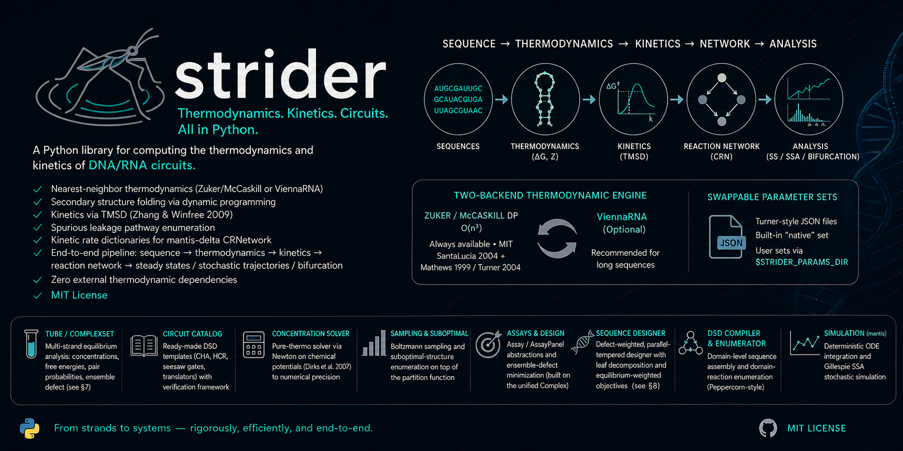

strider-dna
Nucleic-acid thermodynamics, kinetics & circuit design, pure Python, zero NUPACK/Vienna dependency, MIT.


The only nucleic-acid library that bundles multi-strand equilibrium, TMSD kinetics, and gradient-based sequence design in one pure-Python, dependency-free, MIT package, where NUPACK and ViennaRNA give you thermodynamics alone, behind a C/C++ install and a non-OSI license.

Fold a hairpin, design a toehold gate, derive its reaction network, and simulate the circuit, all in pure Python, with no NUPACK or ViennaRNA install. strider computes nearest-neighbor free energies, Zuker/McCaskill secondary structures, multi-strand tube equilibria, and toehold-mediated strand-displacement kinetics, then hands the rates straight to a companion mantis reaction network for ODE or Gillespie simulation. Every parameter is sourced from primary literature (SantaLucia 2004, Turner/Mathews 2004), every result is auditable, and the whole thermodynamic stack is differentiable for gradient-based design. MIT-licensed, with zero external thermodynamic dependencies.
Why strider?
| strider | ViennaRNA | NUPACK | RNAstructure | |
|---|---|---|---|---|
| License | MIT (OSI) | own, non-OSI | non-commercial¹ | academic |
| Pure-Python, zero thermo deps | ✅ | ❌ (C) | ❌ (C++) | ❌ (C++) |
| Multi-strand tube equilibria | ✅ | ✅ (cofold) | ✅ | two-strand |
| TMSD kinetics + CRN derivation | ✅ | ❌ | ❌ | ❌ |
| Differentiable (autodiff) design | ✅ | ❌ | ❌² | ❌ |
| Na⁺ × Mg²⁺ × T salt model | ✅ | Na⁺ only | Na⁺ only | Na⁺ only |
¹ NUPACK requires registration and a non-commercial license. ² NUPACK ships sequence design, but via mutation/sampling rather than gradient-based autodiff. The table reflects each tool's core distribution. strider trades raw speed for openness: it is ~970× slower than NUPACK's C kernel on single-sequence folds and carries a ~0.9 kcal/mol offset vs NUPACK on absolute RNA ΔG, see Known limitations.
30-second quickstart
pip install strider-dna # native backend included, no NUPACK/Vienna needed
from strider import ThermoEngine, draw_structure
import matplotlib.pyplot as plt
engine = ThermoEngine(material='dna', celsius=37, sodium=0.137, magnesium=0.01)
# Fold a hairpin → MFE structure + free energy
seq = 'GGGAAACCCAAAGGGAAACCC'
fold = engine.mfe(seq)
print(fold.structure) # (((...(((...)))...)))
print(f'ΔG = {fold.energy:.2f} kcal/mol') # ΔG = -0.95 kcal/mol
# Draw it, native 2D layout, no external viz dependency
draw_structure(seq, fold.structure)
plt.savefig('hairpin.png', dpi=150)
From pip install to a drawn structure on a clean machine. Keep reading for multi-strand tubes, TMSD kinetics, circuit templates, and differentiable design.
strider is a Python library for computing the thermodynamics and kinetics of DNA/RNA circuits. Given a set of strand sequences, it predicts free energies via nearest-neighbor parameters, folds secondary structures via dynamic programming, derives TMSD rate constants from the Zhang & Winfree (2009) empirical model, enumerates spurious leakage pathways, and produces kinetic rate dictionaries that drop directly into a mantis-delta CRNetwork. The full pipeline, sequence → thermodynamics → kinetics → reaction network → steady states / stochastic trajectories / bifurcation, runs end-to-end with zero external thermodynamic dependencies under an MIT license.
strider ships a two-backend thermodynamic engine that automatically selects the best available calculator: its own Zuker / McCaskill O(n³) DP (always available, MIT, sourced from SantaLucia 2004 + Mathews 1999 / Turner 2004 primary tables) or the ViennaRNA C library (optional, recommended for long sequences). The same API surface works with both; only ThermoEngine(backend=…) changes. Nearest-neighbor parameters live in a swappable ParameterSet that loads from Turner-style JSON files (built-in "native" set always available; user-supplied JSON discoverable via $STRIDER_PARAMS_DIR).
Beyond thermodynamics, strider provides a Tube / ComplexSet API for multi-strand equilibrium analysis (concentrations, free energies, lazy pair-probability matrices, ensemble defect, see §7), a circuit catalog of ready-made DSD templates (CHA, HCR, seesaw gates, translators) wrapped around a generic verification framework, a pure-thermo concentration solver matching standard Newton-on-chemical-potentials (Dirks et al. 2007) to numerical precision, Boltzmann sampling and suboptimal-structure enumeration on top of the partition function, an Assay / AssayPanel design abstraction for ensemble-defect minimization (built on top of the unified Complex primitive) plus a defect-weighted, parallel-tempered sequence designer with leaf decomposition and equilibrium-weighted objectives (see §8), a lightweight DSDCompiler for domain-level sequence assembly plus a DomainReactionEnumerator that derives a circuit's reaction network from strand topology (Peppercorn-style: bind / branch-migration / open → detailed-balance rates → CRN), and, via the companion mantis library, Gillespie SSA stochastic simulation in addition to deterministic ODE integration.
Table of contents
- Installation
- Core concepts
- Quick start
- Command-line interface
- User guide
- ThermoEngine and backends
- DNA / RNA thermodynamics
- Secondary structure prediction
- Boltzmann sampling and subopt enumeration
- TMSD kinetics
- Leakage enumeration
- Multi-strand tube analysis
- Sequence design and the Assay abstraction
- Mutation sensitivity analysis
- Off-target screening
- Circuit catalog and the mantis bridge
- DSDCompiler, domain-level circuit assembly
- Stochastic simulation via mantis
- Parameter sweeps and caching
- Parameter sets and custom NN tables
- Differentiable thermodynamics (PyTorch)
- Export formats
- Surface transducer, LOD, and surface ΔG
- G-quadruplex / aptamer folding
- Low-copy stochastic capture, shot-noise-limited LOD
- Visualization
- API reference
- Examples
- Backend comparison
- Known limitations
- Running the tests
- Troubleshooting
- Background and theory
- Citation
- API stability and versioning
- License
Installation
# Core library (native thermodynamic backend always included)
pip install strider-dna
# From source
git clone https://github.com/EmilioVenegas/strider
cd strider
pip install -e .
Optional backends:
pip install strider-dna[vienna] # ViennaRNA backend (recommended for long sequences)
pip install strider-dna[mantis] # mantis-delta integration (circuit templates, CRNetwork)
pip install strider-dna[pandas] # SweepResult.to_dataframe()
pip install strider-dna[parallel] # ProcessPoolExecutor sweeps
pip install strider-dna[diff] # PyTorch, gradient-based differentiable design
pip install strider-dna[viz] # visualization (matplotlib ≥ 3.6)
pip install strider-dna[full] # all of the above
Requirements: Python ≥ 3.10, NumPy ≥ 1.24, SciPy ≥ 1.10, Matplotlib ≥ 3.6.
PyTorch is not required for the core library; it is pulled in only by the [diff]
(or [full]) extra, for the differentiable design API.
Native acceleration (strider._native, optional)
Importers and any downstream app automatically use a Rust-compiled hot path for
the two most-called kernels — the duplex/Tm walk of strider.thermo.nn_dna
(melting_temperature, duplex_tm, duplex_dg, …) and the scalar salt
corrections of strider.thermo.salt (dg_per_bp_salt runs per base pair
inside the folding DP). When the extension is missing (no Rust toolchain at
build time), strider falls back to the bit-compatible pure-Python code — the
API and outputs stay identical, just slower. Parity is enforced by
tests/test_native_parity.py (10k-sequence fuzz sweep, ≤ 1e-9 tolerance).
pip install . # builds strider._native if cargo is present
./scripts/build_native.sh # dev-only shortcut: cargo build → strider/_native.abi3.so
python scripts/bench_native.py # benchmark table python vs native vs primer3
Measured on scripts/bench_native.py (3000 oligos, qPCR-like salt):
| call | python | native | speedup |
|---|---|---|---|
melting_temperature ×3000 |
18.68 ms | 1.21 ms | 15.4× |
dg_per_bp_salt ×20000 |
5.21 ms | 1.59 ms | 3.3× |
primer3 calc_tm (C) ×3000 |
5.49 ms | — | native is 4.5× faster than primer3's C extension |
PyTorch is optional. Importing
striderand using the full thermodynamics, design, tube, and circuit APIs works without PyTorch installed. Only the differentiable components,DifferentiableDesignerandDiffObjective, need it. They are imported lazily, soimport stridernever fails on a missing torch; accessing them without it raises a clear hint topip install 'strider-dna[diff]'. See §16 Differentiable thermodynamics (PyTorch).Note on import name: the PyPI distribution is
strider-dna, but the Python package is imported asstrider:python import strider from strider import ThermoEngine, CHA, HCR, SeesawGate, Translator from strider import Strand, Complex, SetSpec, ComplexSet, Tube, TubeResult, tube_analysis from strider import Assay, AssayPanel, Assembly, DSDCompiler from strider import ParameterSet, load_parameters from strider import ( SequenceDesigner, DesignObjective, HardConstraint, DefectWeightedPolicy, per_residue_defect_from_ensemble, decompose_assays, ) from strider import solve_equilibrium, sample_structures, subopt_structures
Receipts
Concrete benchmark numbers, reproducible with python scripts/bench_accuracy.py:
| Cohort | Source | strider native |
|---|---|---|
| 11 canonical hairpins (Cheong 1990, Heus 1991, Antao 1991, Mathews 1999, SantaLucia 2004, Lu 2006) | published dot-brackets | mean F-measure 0.99, 10/11 exact match |
toehold_kf, 0–12 nt |
Zhang & Winfree 2009 Fig. 4 | 0 % relative error |
| MFE wall-clock | , | 20 nt ≈ 1.6 ms, 50 nt ≈ 35 ms, 100 nt ≈ 590 ms (single-thread pure Python) |
The mean-F threshold is CI-enforced by tests/test_benchmarks.py, so accuracy regressions show up as a red test rather than as a missed claim.
Core concepts
Nearest-neighbor (NN) model
The standard model for DNA and RNA duplex thermodynamics. The free energy of a fully paired duplex is computed by summing stacking contributions from every adjacent dinucleotide pair (the "nearest neighbors") and adding initiation terms for the terminal bases. Parameters come from SantaLucia & Hicks (2004) for DNA and Mathews et al. (1999) for RNA. strider also includes Sugimoto et al. (1995) parameters for DNA:RNA hybrids.
Ensemble free energy and ΔΔG
ThermoEngine.pfunc(seq) returns the ensemble free energy ΔG = −RT ln Q, where Q is the partition function summed over all secondary structures weighted by their Boltzmann factors. This is more informative than the minimum free energy (MFE) alone because it accounts for the full structural ensemble.
The reaction free energy ΔΔG = ΣG(products) − ΣG(reactants) measures how thermodynamically driven a strand displacement reaction is. Negative ΔΔG means the reaction is spontaneous (products are lower energy).
Toehold-mediated strand displacement (TMSD)
A mechanism in which a short single-stranded overhang (the toehold) on a target strand initiates hybridization with an incoming strand, which then branch-migrates to displace the incumbent strand. Catalytic Hairpin Assembly (CHA) is built from a cascade of TMSD reactions. The forward rate constant kf depends sensitively on toehold length; Zhang & Winfree (2009) measured kf empirically for 0–12 nt toeholds in DNA.
Kinetic stability and the sweet spot
Hairpin kinetics for CHA have a "sweet spot": stems stable enough to suppress leakage (ΔG ≲ −6 kcal/mol) but not so stable that the toehold is buried (ΔG ≳ −12 kcal/mol). The CHA circuit template's verify() method checks this and several other design criteria via the generic CheckRegistry framework, easy to extend with custom checks for non-CHA topologies (HCR, SeesawGate, etc.).
Quick start
from strider import ThermoEngine, CHA, solve_equilibrium
# Create a thermodynamic engine (auto-selects best available backend)
engine = ThermoEngine(material='dna', celsius=37, sodium=0.137, magnesium=0.01)
# Fold a hairpin
result = engine.mfe('TCAACATCAGTCTGATAAGGAGGGAGGTTATCAGACTGA')
print(result.structure) # '((((((......(((((((((((.)))))))))))....))))))'
print(result.energy) # -7.8 kcal/mol
# Duplex binding free energy
ddg = engine.ddg(
reactants=['TCAACATCAGTCTGATGTTGA', 'TCAACATCAGTCTGATAAGG'],
products=[['TCAACATCAGTCTGATGTTGA', 'TCAACATCAGTCTGATAAGG']],
)
print(f"ΔΔG = {ddg:.2f} kcal/mol") # ΔΔG = -8.3 kcal/mol
# Equilibrium concentrations of a 2-strand mix
res = solve_equilibrium(
complexes={
'A': (['A'], 0.0),
'B': (['B'], 0.0),
'AB': (['A', 'B'], -10.0),
},
totals={'A': 1e-7, 'B': 1e-7},
celsius=37.0,
)
print(f"[AB] = {res.concentrations['AB']:.2e} M") # ~4.0e-8
# Full CHA biosensor verification + mantis export
cha = CHA(
sequences={
'mirna': 'TAGCTTATCAGACTGATGTTGA',
'H1': 'TCAACATCAGTCTGATAAGGAGGGAGGTTATCAGACTGA',
'H2': 'TCAGTCTGATAAGGAGGGAGGTATCAGACTGATGTTGATTTTT',
'CP': 'AAAAA',
},
engine=engine,
)
print(cha.verify()) # pretty-printed CircuitReport
rn = cha.to_crnetwork() # requires mantis-delta
sim = cha.simulate( # deterministic ODE
{'mirna': 10e-9, 'H1': 100e-9, 'H2': 100e-9, 'CP': 100e-9}, (0, 7200),
)
Beyond CHA: replace CHA(...) with HCR(...), SeesawGate(logic='AND', ...), Translator(...), or roll your own subclass of CircuitTemplate. Every template has the same .verify(), .to_crnetwork(), .simulate(), .steady_states() surface.
Command-line interface
Installing strider registers a strider console script. Every subcommand takes --json for machine-readable output, and any sequence argument accepts - for stdin or @path for a file.
# MFE structure
$ strider fold GCGCAAAAGCGC
GCGCAAAAGCGC
((((....))))
ΔG = -2.350 kcal/mol (4 bp)
# Ensemble ΔG (single- or multi-strand)
$ strider pfunc GCGCAAAAGCGC
ΔG_ens = -3.127 kcal/mol (Z = 159.7, backend=native)
$ strider pfunc GCGCATGC GCATGCGC --backend vienna
# Duplex ΔG and melting temperature
$ strider duplex GCGCATGC # auto-uses reverse complement
$ strider duplex GCGCATGC GCATGCGC --sodium 0.05
# Tm only
$ strider melt GCGCATGCATGC --strand-conc 1e-7
# Co-transcriptional folding trajectory
$ strider cotx GGGAAACCCAAAGGG --min-length 5 --material rna
5 ..... ΔG=+0.000
...
15 (((...)))(((...))) ΔG=-2.240
# CHA / circuit verification from a JSON sequence spec
$ strider verify cha_spec.json
strider draw, visualization
# 2D secondary structure (folds automatically; --structure for explicit dot-bracket)
$ strider draw structure GCGCAAAAGCGC -o hairpin.png
$ strider draw structure GCGCAAAAGCGC --color accessibility -o hairpin_acc.png
# Multi-strand complex
$ strider draw complex AAACCC GGGTTT --structure "(((&)))" --names H1 H2 -o complex.png
# Toehold-accessibility track with domain annotations
$ strider draw accessibility TCAACATCAGTCTGATAAGG --domains '{"toehold": [0, 6]}' -o acc.png
# Arc diagram (base-pair probabilities)
$ strider draw arc GCGCAAAAGCGC --color-by probability --min-prob 0.05 -o arc.png
# CHA reaction cascade from a JSON spec
$ strider draw reaction --spec cha_spec.json --rates -o cascade.png
# CHA free-energy staircase + assembled-complex column from a JSON spec
$ strider draw landscape --spec cha_spec.json -o landscape.png
All draw subcommands accept --out (required), --dpi, --title, and the standard thermo flags (--celsius, --material, etc.). The output format (PNG, SVG, PDF) is inferred from the file extension.
All commands accept --celsius, --material {dna,rna}, --sodium, --magnesium, and --backend where relevant. Run strider <cmd> --help for full options.
User guide
1. ThermoEngine and backends
ThermoEngine is the central dispatcher. Instantiate once and pass it through your analysis.
from strider import ThermoEngine
# Default is the native engine, strider's own, dependency-free, authoritative.
# 'auto' resolves to 'native' (it is never silently replaced by an external lib).
engine = ThermoEngine(material='dna', celsius=37, sodium=0.137, magnesium=0.01)
# Explicit backend
engine_0 = ThermoEngine(backend='native') # default; always available, MIT-licensed
engine_v = ThermoEngine(backend='vienna') # OPTIONAL cross-check only; must be requested
# Check what's available
print(ThermoEngine.available_backends()) # e.g. ['native'] or ['native', 'vienna']
print(engine.backend_name) # 'native' (unless you asked for 'vienna')
# Optional: load a specific nearest-neighbor parameter set
engine_p = ThermoEngine(material='dna', parameter_set='native-dna')
print(engine_p.params) # ParameterSet(name='native-dna', material='DNA', ...)
Persistent caching
Every mfe() and pfunc() call can be memoized to a SQLite database. Results are keyed by a SHA-256 hash of (operation, material, temperature, salt, sequences):
from strider import ThermoEngine, DiskCache
cache = DiskCache('~/.strider/my_project.db', max_size_mb=200, ttl_days=30)
engine = ThermoEngine(material='dna', celsius=37, cache=cache)
# First call computes; subsequent calls for the same inputs are instant
result = engine.mfe('ATCGATCG')
print(cache.stats()) # {'hits': 1, 'misses': 0, 'hit_rate': 1.0, 'entries': 1, ...}
ML correction hook
correction_model accepts any callable (sequence: str) → float that returns a ΔΔG correction (kcal/mol). This is added to every pfunc() result, useful for plugging in an empirically calibrated neural-network correction on top of the NN model:
my_model = lambda seq: -0.02 * seq.count('G') # trivial example
engine = ThermoEngine(correction_model=my_model)
2. DNA / RNA thermodynamics
Duplex ΔG
from strider import ThermoEngine, duplex_dg, melting_temperature
# Via engine (uses backend-appropriate method)
engine = ThermoEngine()
dg = engine.duplex_dg('ATCGATCG', 'CGATCGAT')
print(f"ΔG = {dg:.2f} kcal/mol") # ΔG = -7.4 kcal/mol
# Standalone NN function (DNA only, always native).
# Two-state ΔH−T·ΔS, with both [Na+] and [Mg2+] folded into the correction.
dg_nn = duplex_dg('ATCGATCG', celsius=37.0, sodium_M=0.137, magnesium_M=0.010)
print(f"ΔG (NN) = {dg_nn:.2f} kcal/mol")
# Melting temperature
tm = melting_temperature('ATCGATCG', strand_conc_M=250e-9, sodium_M=0.137)
print(f"Tm = {tm:.1f} °C") # Tm = 26.3 °C
Hairpin intramolecular folding
# Single sequence → pfunc gives ensemble ΔG of all intramolecular structures
result = engine.pfunc('GGGAAACCC')
print(f"Ensemble ΔG = {result.free_energy:.2f} kcal/mol")
print(f"Partition function Q = {result.partition_function:.3e}")
print(f"Pair probability matrix shape: {result.pair_probs.shape}") # (9, 9)
Hairpin melting temperature
A hairpin melts unimolecularly (folded ⇌ open), so its Tm is concentration-independent and is the temperature at which the folding free energy vanishes, Tm = ΔH / ΔS. strider derives both the ΔG and the Tm from the same engine: the Tm reuses the folding model's own ΔG₃₇ together with the SantaLucia stack enthalpies (the folding STACK table and the DNA_NN ΔH/ΔS agree to ≤0.015 kcal/mol, two views of the same SantaLucia 2004 set), so ΔG(Tm) = 0 by construction. There is no separate duplex-Tm path that can drift away from the reported folding ΔG.
from strider import hairpin_tm, hairpin_thermo, fraction_folded
seq = 'CTTTCAACACTGTTGCAGTAA'
# Tm at the experimental buffer (Mg²⁺ via the Tan-Chen salt model by default)
tm = hairpin_tm(seq, sodium_M=0.05, magnesium_M=0.010)
print(f"Tm = {tm:.1f} °C") # Tm = 40.1 °C
# Full two-state thermodynamics + the closed-state melt curve
th = hairpin_thermo(seq, sodium_M=0.05, magnesium_M=0.010)
print(f"ΔH = {th.dH:.1f} ΔS = {th.dS:.1f} ΔG₃₇ = {th.dG37:+.2f}")
print(f"folded fraction @37 °C = {fraction_folded(seq, 37, 0.05, 0.010):.2f}")
Two-state, single-hairpin only (bulges/multiloops raise
ValueError, usepfuncfor those). A hairpin Tm is hypersensitive to the ΔH/ΔS bookkeeping (a ~few-percent shift moves Tm by tens of °C), so treat the absolute value as calibratable against experiment rather than exact.
Mg²⁺ / salt model (Tan-Chen)
The hairpin Tm folds the salt dependence into the closed-state ΔG₃₇ before ΔS is derived. By default (salt_model="auto") stems ≥ 6 bp use the tightly-bound-ion (TBI) model of Tan & Chen (2007), which, unlike the per-base-pair correction used by the partition-function DP, is a whole-helix quantity that needs the stem length N. The mean electrostatic folding free energy per base stack is
Δg₁ = a₁ + b₁/N (Na⁺) a₁ = −0.07·ln[Na⁺] + 0.012·ln²[Na⁺], b₁ = 0.013·ln²[Na⁺]
Δg₂ = a₂ + b₂/N² (Mg²⁺) a₂ = 0.02·ln[Mg²⁺] + 0.0068·ln²[Mg²⁺], b₂ = 1.18·ln[Mg²⁺] + 0.344·ln²[Mg²⁺]
(DNA coefficients; RNA coefficients also available). Mixed Na⁺/Mg²⁺ buffers combine the two by fractional weights with a cross-term,
x₁ = [Na⁺] / ([Na⁺] + (8.1 − 32.4/N)(5.2 − ln[Na⁺])[Mg²⁺]), x₂ = 1 − x₁
Δg₁₂ = −0.6·x₁·x₂·ln[Na⁺]·ln((1/x₁ − 1)[Na⁺]) / N
ΔG₃₇(salt) = ΔG₃₇(1 M) + (N−1)(x₁Δg₁ + x₂Δg₂) + Δg₁₂
At 1 M Na⁺ / 0 Mg²⁺ every term is zero, so the 1 M reference Tm is unchanged. Stems below 6 bp (outside the fitted range, where 8.1 − 32.4/N degenerates) fall back to the per-base-pair dg_per_bp_salt. Force a model with salt_model="tan_chen" or "per_bp".
Why Tan-Chen: benchmarked against a panel of DNA molecular-beacon hairpins measured by qPCR melt (V. Rejtar data[^rejtar], 50 mM Na⁺, 2.25–10 mM Mg²⁺), Tan-Chen reproduces the experimental Mg²⁺ slope while the per-bp model under-shoots and the duplex-calibrated Owczarzy (2008) correction over-shoots ~3×:
| Mg²⁺ Tm slope, 2.25→10 mM @ 50 mM Na⁺ | °C/mM |
|---|---|
| Measured (qPCR melt, DNA beacons) | ≈0.70 |
| Tan-Chen 2007 (default) | 0.71 |
per-base-pair dg_per_bp_salt |
0.44 |
| Owczarzy 2008 | 2.18 |
On the monovalent (Na⁺) axis all three agree within ~3 °C (e.g. ΔTm ≈ −14 °C at 50 mM vs 1 M), and Tan-Chen tracks ViennaRNA's independent salt model. Coefficients verified against Tan & Chen (2007) Eqs. 24–30.
Citation. Z.-J. Tan and S.-J. Chen, "RNA Helix Stability in Mixed Na⁺/Mg²⁺ Solution," Biophysical Journal 92(10):3615–3632 (2007). doi:10.1529/biophysj.106.100388. (Companion: Tan & Chen, Biophys. J. 90(4):1175–1190, 2006.)
[^rejtar]: Department of Biochemistry, Masaryk University.
Salt and temperature in the folding engine
The sodium, magnesium, and celsius you pass to ThermoEngine now propagate
through the whole native folding path: MFE, the partition function, and the
two-state duplex, not just the hairpin Tm. Both knobs are off by default at the
1 M Na⁺ / 0 Mg²⁺ / 37 °C reference, where results are bit-identical to the
unsalted, ΔG₃₇ engine.
seq = 'GCGCAAAAGCGC'
# Salt: each closed base pair carries the per-bp correction dg_per_bp_salt =
# c·ln([Na⁺] + 3.4·√[Mg²⁺]) (c = −0.114 DNA, ×1.06 RNA; entropic, scales with T).
# MFE, pfunc, and duplex_dg all shift together.
for na, mg in [(1.0, 0.0), (0.05, 0.0), (0.05, 0.010)]:
e = ThermoEngine('dna', sodium=na, magnesium=mg)
print(f"[Na]={na} [Mg]={mg}: MFE={e.mfe(seq).energy:+.2f} pfunc={e.pfunc(seq).free_energy:+.2f}")
# [Na]=1.0 [Mg]=0.0 : MFE=-3.25 pfunc=-3.44
# [Na]=0.05 [Mg]=0.0 : MFE=-1.88 pfunc=-2.21 ← lower salt destabilizes
# [Na]=0.05 [Mg]=0.010: MFE=-2.82 pfunc=-3.04 ← Mg²⁺ buys stability back
# Temperature: the engine extrapolates the *energy tables*, not just the R·T
# Boltzmann prefactor. Each parameter blends toward its enthalpy,
# ΔG(T) = ΔG₃₇·(T/T_ref) + ΔH·(1 − T/T_ref), T_ref = 310.15 K
# so ΔG(37 °C) = ΔG₃₇ exactly and colder = more stable. (At the 1 M reference,
# so the 37 °C value matches the salt example above and isolates temperature.)
for T in (25, 37, 55):
e = ThermoEngine('dna', celsius=T, sodium=1.0, magnesium=0.0)
print(f"T={T} °C: MFE={e.mfe(seq).energy:+.2f}")
# T=25 °C: MFE=-4.44 T=37 °C: MFE=-3.25 T=55 °C: MFE=-1.47
Provenance and scope of the temperature extrapolation:
- DNA is the solid path: stack, mismatch, and tri-/tetraloop ΔH come from the
SantaLucia 2004 / UNAFold
.dhtables; loop-initiation ΔH is genuinely 0 (purely entropic, the UNAFold convention), so loop penalties scale asT/T_ref. - RNA loop-initiation ΔH is curated from Turner 2004 (ViennaRNA
rna_turner2004.par), and unlike DNA it is non-zero (hairpin 1.3/4.8/−2.9…, bulge 10.6/7.1…, interior −7.2/−1.3 kcal/mol). The generator validates each loop-size ΔG against strider's own tables before grafting the ΔH, so the two stay on the same model. - Dangles / terminal mismatches are temperature-resolved on both materials. For DNA they live on the external-loop stacking-ensemble decoration, computed as the standard all-dangles model from the literature dangle parameters (Bommarito et al. 2000) and re-Boltzmannised at T; for RNA they ride the parameter set with curated ΔH (Schroeder & Turner 2000). Both reduce to the 37 °C value exactly.
- Salt is temperature-resolved too: the per-bp correction is entropic
(counterion release), so
ΔG_salt(T) = ΔG_salt(37 °C)·T/T_ref, the sameΔH = 0law as DNA loop initiation (see Salt corrections below). - Still
ΔH = ΔG₃₇(small, no curated enthalpy): the exact small-interior-loop tables (interior_1_1/1_2/2_2), terminal penalty, coaxial stacking, multiloop, and asymmetry terms, temperature-independent until enthalpies are added.
The hairpin Tm path above uses the whole-helix Tan-Chen salt model; the folding engine here uses the per-base-pair
dg_per_bp_salt(the quantity the McCaskill DP can apply pair-by-pair). They are two correct corrections for two different calculations, see Background → Salt corrections.
Reaction ΔΔG
engine.ddg() is the workhorse for pathway analysis. Each element of reactants / products is either a single sequence string (computed as a monomer) or a list of sequences (computed as a multi-strand complex):
mirna = 'TAGCTTATCAGACTGATGTTGA'
H1 = 'TCAACATCAGTCTGATAAGGAGGGAGGTTATCAGACTGA'
# ΔΔG for miRNA + H1 → miRNA·H1 complex
ddg_r1 = engine.ddg(
reactants=[mirna, H1],
products=[[mirna, H1]], # list inside list = multi-strand complex
)
print(f"ΔΔG(R1) = {ddg_r1:.2f} kcal/mol") # e.g. -8.5 kcal/mol
Toehold accessibility
The fraction of the ensemble in which all toehold positions are simultaneously unpaired, a direct measure of how accessible the toehold is for incoming strand binding:
# Check accessibility of the first 6 nt (the toehold) of H1
prob = engine.toehold_accessibility(H1, toehold_positions=list(range(6)))
print(f"Toehold accessible in {prob:.1%} of ensemble")
Salt corrections
Salt corrections for non-1M NaCl and Mg²⁺ are applied automatically when sodium ≠ 1.0 or magnesium > 0. Two distinct corrections are wired in:
- Duplex / melting temperature, Owczarzy et al. (2004) for Na⁺ and Owczarzy et al. (2008) for Mg²⁺, with a mixed-ion regime from the √[Mg²⁺]/[Na⁺] ratio.
- Partition function / ensemble ΔG, per-base-pair correction
ΔG_per_bp(T) = c·ln([Na⁺] + 3.4·√[Mg²⁺])·T/T_refkcal/mol, applied to each closed pair inside the McCaskill DP so it is automatically ensemble-weighted by the pair probability.cis an Owczarzy-style empirical fit (Owczarzy 2004/2008; Na⁺ ∈ [0.05, 1.0] M, Mg²⁺ ∈ [0, 0.1] M, ±0.005 kcal/mol/bp): −0.114 for DNA, ×1.06 for RNA (the Tan & Chen 2007 RNA/DNA per-stack ratio, RNA's tighter A-form helix gives ~6 % stronger counterion release). The dependence is entropic (counterion release, ΔH_salt ≈ 0), so it scales with absolute temperature. Seestrider.thermo.salt.dg_per_bp_salt.
The two formulas serve different purposes (Tm uses the original Owczarzy Tm-shift form; pfunc needs a per-pair ΔG that integrates over the structural ensemble). Both reduce to zero at 1 M Na⁺ / 0 Mg²⁺, the SantaLucia/Turner reference state, for every temperature.
Chemical modifications (LNA, 2′OMe, PS)
from strider import ModificationSite, apply_modifications
dg_unmod = engine.duplex_dg('ATCGATCG')
mods = [
ModificationSite(position=0, mod_type='LNA'), # +L at position 0
ModificationSite(position=7, mod_type='LNA'), # +L at position 7
]
dg_mod = apply_modifications(dg_unmod, 'ATCGATCG', mods)
print(f"ΔΔG(modification) = {dg_mod - dg_unmod:.2f} kcal/mol") # ~-3.0
3. Secondary structure prediction
MFE structure
from strider import fold_mfe, ThermoEngine
# Standalone Zuker-style DP (native backend)
structure, energy, pairs = fold_mfe('GGGAAATTTCCC', celsius=37.0, material='dna')
print(structure) # '((((....))))'
print(energy) # -2.8 kcal/mol
print(pairs) # [(0, 11), (1, 10), (2, 9), (3, 8)]
# Via engine (uses configured backend)
engine = ThermoEngine()
result = engine.mfe('GGGAAATTTCCC')
print(result.structure, result.energy, result.base_pairs)
Pseudoknots
fold_pseudoknot() extends the standard MFE algorithm to consider H-type pseudoknots (the most common class in biosensor contexts). It uses a restricted Rivas & Eddy (1999) grammar at O(n⁴) time:
from strider import fold_pseudoknot
structure, energy, pairs = fold_pseudoknot('GGGCCCTTTGGGCCC')
# structure uses () for normal pairs, [] for pseudoknot pairs
print(structure) # e.g. '(((....[[)))....]]]'
Co-transcriptional folding
fold_cotranscriptional() sweeps prefix lengths and folds each one, returning the trajectory of structures the strand passes through while being transcribed. This matters for riboswitches, aptamers, and any RNA whose biology depends on a kinetic intermediate rather than the final MFE:
from strider import fold_cotranscriptional
traj = fold_cotranscriptional('GGGAAACCCAAAGGG', material='rna', min_length=5)
for p in traj.prefixes:
print(f'{p.length:>3} {p.structure} ΔG={p.energy:+.2f}')
# Detect where existing pairs broke as 3' sequence arrived
print(traj.rearrangements()) # e.g. [(9, 12)], refold between length 9 and 12
print(traj.final().structure) # fully-transcribed MFE
step=N subsamples every Nth prefix for long sequences. The full-length prefix is always included regardless of step.
Dot-bracket parsing and analysis
from strider import parse_pairs, to_dot_bracket, validate
from strider.structure.dot_bracket import stem_regions, unpaired_positions
structure = '(((...)))'
pairs = parse_pairs(structure) # [(0, 8), (1, 7), (2, 6)]
rebuilt = to_dot_bracket(pairs, 9) # '(((...)))'
print(validate('(((...)))')) # True
print(validate('(((...))')) # False (mismatched)
stems = stem_regions(structure) # [(0, 8, 3)], one stem of length 3
unpaired = unpaired_positions(structure) # [3, 4, 5]
Mountain representation
The mountain plot encodes the nesting depth at each position, a compact fingerprint for comparing structures:
from strider import mountain_vector, compare_structures
m = mountain_vector('(((...)))') # array([0, 1, 2, 2, 2, 2, 2, 1, 0])
dist = compare_structures('(((...)))', '((.......))') # L1 distance, range [0, 1]
print(f"Structure distance: {dist:.3f}")
4. Boltzmann sampling and subopt enumeration
When the MFE structure alone misrepresents the ensemble (e.g. competing folds within a few kcal/mol of the optimum), two routines help inspect what's really happening: Boltzmann sampling over the partition function, and exhaustive suboptimal enumeration over the MFE DP.
Boltzmann sampling
Draw n structures distributed according to their equilibrium probabilities (Ding & Lawrence 2003, stochastic traceback over the Qb/Q/QM matrices):
from strider import sample_structures
from collections import Counter
samples = sample_structures('GCGCGCAAAAGCGCGC', n_samples=100, seed=0)
counts = Counter(db for db, _ in samples)
for db, n in counts.most_common(5):
print(f"{n:3d} {db}")
# 78 ((((((....)))))) ← MFE dominates for a strong hairpin
# 9 ............
# 5 (((((......))))).
# ...
Suboptimal-structure enumeration
Enumerate all structures within gap kcal/mol of the MFE. The enumerator is a Wuchty-style recursion over the same nick-aware V/W/WM/WM1 matrices fold_mfe uses (hairpins, internal loops/bulges, multiloops, inter-strand pairs, salt correction), so the lowest-energy structure it returns is identical to fold_mfe; subopt and mfe cannot drift apart:
from strider import subopt_structures
for db, e, _ in subopt_structures('GCGCAAAAGCGC', gap=3.0, max_structures=20):
print(f"{e:7.3f} {db}")
# -3.250 ((((....))))
# -1.410 (((......)))
# -1.010 .(((....))).
Multi-strand / dimers. Pass '&'-joined strands to subopt_structures to enumerate dimer / complex structures for that one strand concatenation; dot-brackets carry the strand separator and pair_list is indexed over the concatenated sequence (matching mfe):
for db, e, _ in subopt_structures('GCGCAATTGCGC&GCGCAATTGCGC', gap=3.0):
print(f"{e:7.2f} {db}")
# -19.08 ((((((((((((&)))))))))))) ← full inter-strand duplex
# -16.84 .(((((((((((&))))))))))).
# ...
Via the engine, engine.subopt(*strands) is order-invariant (like engine.mfe, see §7): it gathers suboptimals across strand arrangements, deduplicates, and reports them in the MFE-winning strand order (pseudoknot brackets []/{} mark pairs that cross in that order). Its energies are mfe-consistent free energies, each structure's loop energy plus the component-aware association penalty (L−k)·ΔG_assoc (where k is the number of connected components of that structure, so a suboptimal that lets a strand float free pays one fewer association) plus its coaxial-nick stabilization. Hence for a heteromeric complex engine.subopt(*strands)[0] == engine.mfe(*strands).energy regardless of strand order; they differ only by the complex-level rotational-symmetry term σ (a −RT·ln σ ensemble correction, not a per-structure energy), which is nonzero only for homomeric complexes. Because the association discount can pull a partly-dissociated structure into the window, the gap is applied on these corrected free energies.
Salt (sodium_M / magnesium_M) is applied per closed base pair, so both routines track [Na⁺]/[Mg²⁺]; at the 1 M Na⁺ / 0 Mg²⁺ reference the correction is exactly zero.
Both procedures are also exposed as engine methods, engine.sample(seq, n) and engine.subopt(*strands, gap=…) (which inherit the engine's salt/temperature), for use inside design objectives.
5. TMSD kinetics
Toehold rate constants
toehold_kf() uses the Zhang & Winfree (2009) empirical lookup table at 25 °C and applies an Arrhenius correction to the target temperature (Ea ≈ 20 kcal/mol for DNA TMSD):
from strider import toehold_kf, displacement_kf, leakage_kf, rates_from_ddg
# Forward rate at 37 °C for a 6-nt toehold
kf = toehold_kf(n_nt=6, material='dna', celsius=37.0)
print(f"kf = {kf:.2e} M⁻¹ s⁻¹") # kf ≈ 5.5e5 M⁻¹ s⁻¹
# Derive reverse rate from ΔΔG and detailed balance
kf_val, kr_val = rates_from_ddg(ddg=-8.5, kf=kf, celsius=37.0)
print(f"kr = {kr_val:.2e} s⁻¹")
# Boltzmann-suppressed leakage rate (hairpin breathing model)
k_leak = leakage_kf(stem_stability_kcal=7.5)
print(f"k_leak = {k_leak:.2e} M⁻¹ s⁻¹") # ≪ kf
TMSDKineticModel, full circuit rates
TMSDKineticModel computes ΔΔG internally from the ThermoEngine and returns mantis-compatible rate dictionaries:
from strider import ThermoEngine, TMSDKineticModel
engine = ThermoEngine(material='dna', celsius=37, sodium=0.137, magnesium=0.01)
model = TMSDKineticModel(engine)
# Compute rates for a single reaction
rate_set = model.reaction_rates(
reactant_seqs=['TAGCTTATCAGACTGATGTTGA', 'TCAACATCAGTCTGATAAGG'],
product_seqs=[['TAGCTTATCAGACTGATGTTGA', 'TCAACATCAGTCTGATAAGG']],
toehold_length=6,
mechanism='toehold_binding',
)
print(rate_set)
# TMSDRateSet(kf=5.5e5, kr=2.1e-3, k_eq=2.6e8, ddg=-8.5, toehold_length=6, ...)
# Build a full mantis-compatible rate dict for a circuit
reactions = [
"mirna + H1 <-> mirna_H1",
"mirna_H1 + H2 <-> H1H2 + mirna",
]
sequences = {
'mirna': 'TAGCTTATCAGACTGATGTTGA',
'H1': 'TCAACATCAGTCTGATAAGG...',
'H2': 'TCAGTCTGATAAGGA...',
}
rates = model.circuit_rates(reactions, sequences, toehold_map={"mirna + H1 <-> mirna_H1": 6})
Arrhenius utilities
from strider import arrhenius, detailed_balance_kr, k_eq_from_ddg, ddg_from_k_eq
# Scale a rate constant between temperatures
kf_50 = arrhenius(k_ref=5.5e5, ea_kcal=20.0, T_ref_K=298.15, T_K=323.15)
# Derive reverse rate from ΔΔG
kr = detailed_balance_kr(kf=5.5e5, ddg_kcal=-8.5, celsius=37.0)
# Convert between ΔΔG and Keq
keq = k_eq_from_ddg(-8.5, celsius=37.0) # ≈ 9.6e5
ddg = ddg_from_k_eq(keq, celsius=37.0) # ≈ -8.5
6. Leakage enumeration
LeakageEnumerator systematically checks all pairwise (and optional tripartite) strand combinations for thermodynamically favorable spurious complexes:
from strider import ThermoEngine, LeakageEnumerator
engine = ThermoEngine()
enumerator = LeakageEnumerator(
engine,
ddg_threshold=-4.0, # report reactions with ΔΔG < -4 kcal/mol
max_complex_size=3, # check pairs and triplets
max_pathways=100,
)
strands = {
'H1': 'TCAACATCAGTCTGATAAGG...',
'H2': 'TCAGTCTGATAAGGAG...',
'CP': 'AAAAA',
}
report = enumerator.enumerate(
strands,
intended_reactions=["H1 + H2 <-> H1H2"], # exclude known-intended reactions
)
print(report)
# LeakageReport(3 spurious reactions, worst ΔΔG=-5.82 kcal/mol)
for rxn in report.reactions:
print(rxn.mantis_string, f" ΔΔG={rxn.ddg:.2f}")
# Filter to only the worst offenders
critical = report.filter(ddg_threshold=-5.0)
# Export as mantis reaction strings
mantis_strings = report.to_mantis_strings()
Each SpuriousReaction has a pathway_type classifying it as "hybridization", "displacement", or "cooperative".
7. Multi-strand tube analysis
The high-level Tube API answers the question "given these strands at these total concentrations, what does the equilibrium ensemble look like?" The pipeline:
- Wrap each sequence in a
Strand(name, sequence, material). - Describe which complexes can form via a
ComplexSetwith aSetSpec(max stoichiometry plus optional include/exclude rules). - Build a
Tube(strand_totals, complexes). - Call
tube.analyze(engine)(ortube_analysis([tube1, tube2, ...], engine)). - Inspect
TubeResult.concentrations,.free_energies,.strand_free, plus lazy.pair_probabilities(name)and.defect(name, target_structure).
from strider import Strand, ComplexSet, SetSpec, Tube, ThermoEngine
H1 = Strand("H1", "GCAGTGAGACGAGCTGCT", material="dna")
H2 = Strand("H2", "AGCAGCTCGTCTCACTGC", material="dna")
engine = ThermoEngine(material="dna", celsius=37, sodium=0.137, magnesium=0.01)
tube = Tube(
strand_totals={H1: 1e-6, H2: 1e-6},
complexes=ComplexSet([H1, H2], SetSpec(max_size=2)), # monomers + all dimers
name="biosensor",
)
result = tube.analyze(engine)
for species, conc in sorted(result.concentrations.items(),
key=lambda kv: -kv[1]):
print(f"{species:6s} ΔG = {result.free_energies[species]:+7.2f} [X] = {conc:.2e} M")
# Lazy: pair-probability matrix and ensemble defect only computed on demand.
P = result.pair_probabilities("H1_H2")
d = result.defect("H1", "((((....))))")
SetSpec controls enumeration:
SetSpec(max_size=2) # all complexes ≤ 2 strands
SetSpec(max_size=3) # plus trimers
SetSpec(max_size=2, exclude=[Complex.from_names(["H1", "H1"])]) # drop homodimer
SetSpec(max_size=0, include=[ # only explicit complexes
Complex.from_names(["H1", "H2"], name="signal"),
])
Complex is canonicalized by sorted strand names, so Complex(strands=(H1, H2)) and Complex(strands=(H2, H1)) are the same chemical species. The cyclic-rotation symmetry number σ (Dirks et al. 2007 eq. 11) is exposed at cx.sigma and applied automatically inside the engine's pfunc.
Order-invariant complex folding
A linear folding DP can only represent structures that are non-crossing for one strand concatenation, so a complex's predicted MFE would otherwise change if you merely relabel the strand order (Dirks et al. 2007). engine.mfe(*strands) removes this artifact: it searches strand arrangements and returns the global minimum over a structure that connects all strands, exactly for small complexes (every distinct cut is folded, within a length-scaled budget; dimers, trimers, small 4-strand), and via a sequence-affinity + crossing-minimisation heuristic for larger fused networks. The result is the same regardless of how the strands are listed:
eng = ThermoEngine(backend="native")
def rc(s): return s.translate(str.maketrans("ACGT", "TGCA"))[::-1]
A, B, C = "GGAATTCCGTAC", "ACGTGGCATTAC", "TGCATGCAAGCT"
ring = [rc(A) + B, rc(B) + C, rc(C) + A] # closed 3-strand triangle
import itertools
print({round(eng.mfe(*p).energy, 3) for p in itertools.permutations(ring)})
# {-35.622} ← identical from all 6 orderings
The winning permutation is reported as MFEResult.strand_order (new slot → input strand index); structure/base_pairs/sequence are expressed in that order, since a structure nested in the winning order may be pseudoknotted in the caller's. engine.subopt (§4) is order-invariant the same way.
The multi-strand complex free energy (engine.pfunc, and therefore ddg and the tube concentrations) includes, beyond the loop energies: the σ rotational-symmetry term; the bimolecular association penalty (L−1)·ΔG_assoc (DNA 1.96 / RNA 4.09 kcal/mol per association, from JOIN_PENALTY, the same term NUPACK puts in its complex free energy); and a coaxial-stacking correction at flush strand nicks. Single-strand folding matches NUPACK to ≈0.05 kcal/mol; for multi-strand complexes a residual ensemble-breadth gap remains (NUPACK's dangle/coaxial ensemble stabilises partial microstates more), see docs/limitations.md.
Low-level solver
solve_equilibrium() is the underlying convex-dual Newton solver if you want to skip the Tube wrapper (e.g. you already have per-complex ΔG values from somewhere else):
from strider import solve_equilibrium
res = solve_equilibrium(
complexes={
"A": (["A"], 0.0),
"B": (["B"], 0.0),
"AB": (["A", "B"], -10.0), # ΔG of the dimer (kcal/mol, 1 M standard)
},
totals={"A": 1e-7, "B": 1e-7},
celsius=37.0,
)
print(res.converged, res.iterations, res.residual)
print(res.concentrations) # {'A': 6.0e-8, 'B': 6.0e-8, 'AB': 4.0e-8}
If your input ΔG comes from a tool using a non-1 M reference state (e.g. water-molarity at ~55 M), pass standard_state_M=water_molarity(celsius) so the solver applies the corresponding (N − 1)·RT·ln(c₀) shift per N-strand complex.
The legacy equilibrium_from_engine(engine, strands_dict, totals, max_size=N) is preserved as a thin wrapper over Tube.analyze, keep it for backward compat, prefer the Tube API for new code.
Rotational symmetry
cyclic_symmetry(strand_list) returns the cyclic-symmetry number σ used to correct homomeric multi-strand pfunc values. ThermoEngine.pfunc and Complex.sigma already use it under the hood so that every backend reports species-level (not ordered-complex) ΔG.
8. Sequence design and the Assay abstraction
SequenceDesigner minimizes a composable DesignObjective using simulated annealing. Free domains are optimized; fixed domains (e.g. the miRNA binding site) are held constant.
from strider import ThermoEngine, SequenceDesigner, DomainSpec, DesignObjective, HardConstraint
engine = ThermoEngine()
# Specify domains: free vs fixed
domains = {
'toehold': DomainSpec(length=6, material='dna'), # free
'stem': DomainSpec(length=11, material='dna'), # free
'binding': DomainSpec(sequence='TAGCTTATCAGACTGATGTTGA'), # fixed
}
# Compose objective: target ΔΔG for binding + hairpin stability
objective = (
DesignObjective.ddg_target(engine, ['binding'], [['binding', 'stem']], target=-9.0, weight=2.0)
+ DesignObjective.gc_content('toehold', target_gc=0.5, weight=1.0)
+ DesignObjective.minimize_leakage(engine, ['toehold', 'stem'], threshold=-4.0, weight=0.5)
)
# Hard constraints: no AAAA runs, GC content between 40–60%
constraints = [
HardConstraint.max_run(max_run_length=4),
HardConstraint.gc_content(min_gc=0.4, max_gc=0.6),
]
designer = SequenceDesigner(engine, seed=42)
result = designer.design(
domains,
objective,
hard_constraints=constraints,
n_trials=10,
max_iterations=500,
)
print(result)
# DesignResult(score=0.0312, iterations=500, seqs=['toehold', 'stem', 'binding'])
print(result.sequences)
print(result.objective_breakdown)
Built-in objectives
| Factory method | What it penalizes |
|---|---|
DesignObjective.ddg_target(engine, reactants, products, target) |
(ΔΔG − target)² |
DesignObjective.ddg_range(engine, reactants, products, min, max) |
ΔΔG outside [min, max] |
DesignObjective.minimize_leakage(engine, strand_names, threshold) |
Pairwise ΔΔG below threshold |
DesignObjective.toehold_accessible(engine, strand_name, positions, min_prob) |
Low toehold accessibility |
DesignObjective.ensemble_defect(engine, strand_names, target_structure) |
Normalized expected mispaired nucleotides vs target dot-bracket (Zadeh 2011), NUPACK complex_design |
DesignObjective.multitube_defect(engine, tubes, tube_weights=None) |
Weighted sum of the test-tube ensemble defect (structural + concentration defect) over N tubes, NUPACK tube_design (1 tube) / multistate design (N tubes); see below |
DesignObjective.gc_content(strand_name, target_gc) |
(GC − target)² |
DesignObjective.from_callable(fn) |
Any Python callable returning a float |
Multistate / multi-tube design (multitube_defect). This is the equilibrium-aware analogue of ensemble_defect, matching NUPACK's tube_design and multistate test-tube design. Each tube is given as (tube_factory, on_targets), where tube_factory(seqs) → Tube rebuilds the tube from the current sequences and on_targets is a list of (complex_canonical_name, target_dot_bracket, target_concentration_M). For every tube the optimizer runs a real equilibrium solve and scores the normalized test-tube ensemble defect TubeResult.tube_ensemble_defect:
C_tube = ( Σ_h c_h·ñ(h, s_h) + Σ_h |h|·max(0, c_h* − c_h) ) / ( Σ_h |h|·c_h* )
└── structural defect ──┘ └── concentration defect ──┘
The structural term is each on-target complex's equilibrium concentration c_h times its unnormalized ensemble defect; the concentration term penalizes on-target material that failed to form at its target concentration c_h* because the strands were sequestered in off-targets. Off-targets need no explicit list or ΔΔG threshold; they are simply every non-on-target complex in the tube, and the equilibrium solve has already distributed strands among them. The multi-tube objective is Σ_t tube_weights[t]·C_tube(t), so a single tube reproduces tube_design and several tubes give true multistate design. A tube whose solve raises contributes +inf (the SA move is rejected).
Dynamical (closed-loop) objectives. These factories drive optimization
from a kinetic cost: each evaluation rebuilds a mantis CRNetwork via the
caller-supplied network_factory: (seqs) → CRNetwork (typically a closure
over CircuitBridge.to_crnetwork or a circuit template's .to_crnetwork)
and runs an ODE simulation or bifurcation scan before returning a scalar.
They compose with the static objectives under the same + / * protocol.
| Factory method | What it penalizes |
|---|---|
DesignObjective.kinetic_trajectory(factory, ic, target_curve, times) |
Normalized MSE between simulated and target concentration trajectories |
DesignObjective.maximize_kcat(factory, species, ic, t_window) |
−Δ[species]/Δt (drives the catalytic production rate up) |
DesignObjective.minimize_leak(factory, signal, ic_no_trigger, t_window, threshold) |
(log10(leak / threshold))² for a no-trigger control sim above threshold |
DesignObjective.bistable_threshold(factory, parameter, range, species, target) |
(log10(threshold_actual / target))² at the bifurcation-scan crossing |
DesignObjective.from_simulation(factory, ic, t_span, cost_fn) |
Escape hatch, arbitrary cost_fn(SimulationResult) → float |
See examples/09_dynamical_design.py for a complete pipeline; the spec
behind these factories is item 1 of outperform_nupack.md (closed-loop
dynamical sequence design).
Objectives compose with + and scale with *:
total = 2.0 * objective_a + objective_b + 0.5 * objective_c
Built-in hard constraints
| Factory method | What it enforces |
|---|---|
HardConstraint.no_repeats(motifs) |
Forbid specified sequence motifs |
HardConstraint.gc_content(min_gc, max_gc) |
GC fraction in [min, max] |
HardConstraint.no_self_complement(min_length) |
No self-complementary run ≥ min_length |
HardConstraint.iupac_pattern(strand_name, pattern, start) |
IUPAC code match at offset |
HardConstraint.max_run(max_run_length) |
No homopolymer run > max_run_length |
HardConstraint.min_length(length) |
Minimum sequence length |
HardConstraint.from_callable(fn) |
Any (name, seq) → bool |
Assay / AssayPanel, high-level design intent
For circuit-level design, Assay bundles a set of on-target assemblies (each with its dot-bracket target and expected concentration) plus off-target assemblies that must not form. It compiles into a DesignObjective that the designer minimizes:
from strider import Assay, AssayPanel, Assembly, SequenceDesigner, DomainSpec
assay = Assay(
name='hairpin_sensor',
on_targets=[
Assembly('H', ['H'], '((((....))))', concentration=1e-7),
],
off_targets=[
Assembly('H_H', ['H', 'H']), # forbid homodimer
],
off_target_ddg_threshold=-4.0, # penalize binding stronger than this
)
designer = SequenceDesigner(engine, seed=0)
result = designer.design(
domains={'H': DomainSpec(length=12)},
objective=assay.to_objective(engine),
n_trials=4,
max_iterations=200,
)
An AssayPanel sums multiple Assay objectives so you can design across several test tubes at once:
panel = AssayPanel(assays=[assay_low_temp, assay_high_temp])
objective = panel.to_objective(engine)
Defect-weighted mutation sampling and parallel tempering
For objectives dominated by ensemble defect (anything compiled from an Assay on-target, or DesignObjective.ensemble_defect), uniform-random base flips waste most of their proposals on already-satisfied positions. The DefectWeightedPolicy biases site selection by the per-residue defect vector, positions whose target pair is poorly satisfied get flipped more often, and is the recommended default for any defect-driven task:
from strider import (
DefectWeightedPolicy, per_residue_defect_from_ensemble, SequenceDesigner,
DomainSpec, DesignObjective, ThermoEngine,
)
engine = ThermoEngine(material="dna")
target = "((((....))))"
objective = DesignObjective.ensemble_defect(engine, ["H"], target)
# Per-residue defect = 1 − P_correct(i) under McCaskill (Zadeh, Wolfe & Pierce 2011)
defect_fn = per_residue_defect_from_ensemble(engine, ["H"], target)
policy = DefectWeightedPolicy(defect_fn=defect_fn)
designer = SequenceDesigner(engine, seed=0)
result = designer.design(
domains={"H": DomainSpec(length=12)},
objective=objective,
n_trials=3,
max_iterations=5000,
mutation_policy=policy,
parallel_tempering=True, # geometric T_end → T_start ladder of chains
n_chains=4,
swap_every=20,
)
Parallel tempering runs n_chains Metropolis chains in parallel on a geometric temperature ladder; every swap_every steps adjacent chains attempt a swap. Hot chains hop between basins; the cold chain captures the global minimum. Early rejection via DomainSpec(length=L, gc_band=(0.3, 0.7)) skips out-of-band candidates before the (expensive) objective evaluation. HardConstraint.propose(name, seq, pos, rng, bases) lets the designer route base-flip generation through a constraint when one provides a proposer, instead of relying on reject-after-the-fact filtering, the ConstraintAwarePolicy wrapper opts into this behaviour.
Equilibrium-weighted Assay objective
By default Assay.to_objective(engine) weights each on-target defect by the user-declared Assembly.concentration. Passing equilibrium=True instead runs a Tube.analyze solve over the union of all declared assemblies and weights every on-target by its true post-equilibrium concentration:
obj = assay.to_objective(engine, equilibrium=True)
This is more expensive (one Newton solve per objective evaluation) but captures composition shifts, large off-target stability eats into the on-target weight automatically.
Leaf decomposition
A multi-strand design panel whose assemblies decompose into disjoint strand subsets can be optimised one leaf at a time. decompose_assays(...) splits an Assay (or AssayPanel) into the smallest independent sub-assays based on strand-graph connected components:
from strider import decompose_assays
leaves = decompose_assays(assay_panel)
for leaf in leaves:
designer.design(...leaf-specific domains..., objective=leaf.to_objective(engine))
Strands that appear in any pair of assemblies stay in the same leaf, so off-target penalties continue to constrain the structures they target.
Design benchmark CLI
python scripts/bench_design.py --iterations 2000 --trials 3
# hairpin-12 defect=0.0591 floor=0.06 iters=2000 wall=2.6s
# hairpin-20 defect=0.0789 floor=0.04 iters=2000 wall=12.4s
# duplex-12 defect=0.1575 floor=0.10 iters=2000 wall=24.0s
The runner exercises the canonical hairpin / duplex tasks defined in strider.design.benchmarks. The reported floors are the lowest defects achievable with the native McCaskill DP at each length, convergence of "≤ 2× the floor" is the realistic target on a pure-Python engine.
9. Mutation sensitivity analysis
MutationAnalyzer computes how each nucleotide position contributes to a thermodynamic metric by exhaustively scanning all single-nucleotide mutations:
from strider import ThermoEngine, MutationAnalyzer
engine = ThermoEngine()
analyzer = MutationAnalyzer(engine)
profile = analyzer.single_nt_scan(
sequence='TCAACATCAGTCTGATAAGG',
target='TAGCTTATCAGACTGATGTTGA', # hybridization partner
tolerance=1.0, # kcal/mol tolerance for robustness
)
print(f"Robustness: {profile.robustness:.1%}") # fraction of mutations within tolerance
print(f"Critical positions: {profile.critical_positions(threshold=2.0)}")
# Heatmap visualization
profile.plot(title="H1 mutation sensitivity")
profile.max_sensitivity gives the worst-case ΔΔG over all three possible mutations at each position, useful for identifying positions that must be preserved.
10. Off-target screening
OffTargetScreener screens a probe sequence against a reference database (FASTA) using k-mer pre-filtering followed by full ΔΔG evaluation:
from strider import ThermoEngine, OffTargetScreener
engine = ThermoEngine()
screener = OffTargetScreener(engine, reference_db='mirbase_hsa.fa', kmer_k=7)
report = screener.screen(
sequence='TCAACATCAGTCTGATAAGG',
n_top=10,
ddg_threshold=-4.0,
)
print(report)
# ScreeningReport(query=TCAACATCAGTC..., hits=2, specific=False)
for hit in report.hits:
print(f" {hit.name} ΔΔG={hit.ddg:.2f} shared_kmers={hit.k_score}")
# Direct selectivity comparison against a family
selectivity = screener.specificity_vs(
sequence='TCAACATCAGTCTGATAAGG',
family_members=[miR21_alt1, miR21_alt2, miR155],
target='TAGCTTATCAGACTGATGTTGA',
)
# {miR21_alt1: +1.2, miR21_alt2: +2.4, miR155: +5.8} (positive = more selective)
You can also add sequences in-memory without a FASTA file:
screener.add_sequences({'miR155': 'UUAAUGCUAAUUGUGAUAGGGGU'})
11. Circuit catalog and the mantis bridge
strider ships a catalog of DSD circuit templates under strider.circuits. All templates share the same API: a strand set, a reaction topology, a toehold map, and a default check suite. Each emits a CircuitBridge for use with the mantis simulator.
from strider import CHA, HCR, SeesawGate, Translator
CHA, Catalytic Hairpin Assembly
cha = CHA(
sequences={
'mirna': 'TAGCTTATCAGACTGATGTTGA',
'H1': 'TCAACATCAGTCTGATAAGGAGGGAGGTTATCAGACTGA',
'H2': 'TCAGTCTGATAAGGAGGGAGGTATCAGACTGATGTTGATTTTT',
'CP': 'AAAAA',
},
toehold_d1=6, # miRNA·H1 toehold length
toehold_d2=11, # H2 branch migration domain
tail_cp=9, # CP tail length
)
CHA as a generator, from_target and design
The constructor above checks sequences you already have. CHA can also build them from a target. from_target lays out the domains (the target's 3′ end is the initiation toehold D1, the adjacent block the branch-migration stem D2, plus a hairpin loop and an optional orthogonal capture handle K → CP = K*) and assembles ready-to-verify() strands:
cha = CHA.from_target(
'UAGCUUAUCAGACUGAUGUUGA', # target (RNA or DNA)
d1_len=7, d2_len=13,
loop='ACTTAATTAAGT',
capture='ACGATCAGTCATGCAACGTA', # K (CP = reverse complement)
)
report = cha.verify() # round-trips with the checker
design goes further: it searches for the split, loop, and capture handle. It scans d1_grid × d2_grid × loops, ranks each combo by a cascade-gate penalty (R1/R2 driving force, toehold accessibility, hairpin-stability sweet-spot), then for the top rerank_top_n combos designs an orthogonal handle K with SequenceDesigner and re-ranks on the post-capture gate, the R2 measured with K attached to H1, which is what validation actually gates on, not the bare-hairpin proxy:
cha = CHA.design(
'UAGCUUAUCAGACUGAUGUUGA',
d1_grid=(6, 7, 8), d2_grid=(11, 13, 15),
capture_len=20, rerank_top_n=3,
n_trials=3, max_iterations=120,
)
print(cha.design_info['context']) # chosen (d1, d2, loop)
rn = cha.to_crnetwork() # straight into mantis
Two reusable pieces underpin design, both usable on their own for any circuit:
DesignObjective.reaction_driving_force(engine, reactants, products, max_ddg, assemble_fn=…), a coupling constraint: penalize a reaction whose driving force drifts above a gate while the optimizer tunes a different domain.assemble_fnbuilds the full strands so the gate is measured on the assembled context (e.g. the handle attached to H1), not the bare domain. This is the design-time mirror of thereaction_driving_forcecheck.design_with_rerank(designer, contexts, build_problem, score_fn, top_n=3), design the top-N pre-ranked contexts and pick the winner by a downstreamscore_fnevaluated on the finished design (the gate-with-downstream value), rather than trusting the pre-rank proxy.
HCR, Hybridization Chain Reaction
hcr = HCR(
sequences={'I': '...', 'H1': '...', 'H2': '...'},
toehold_initiator=6,
toehold_branch=6,
)
SeesawGate, Qian-Winfree compute primitive (YES / AND / OR / NOT)
gate = SeesawGate(
logic='AND',
sequences={
'Input1': '...', 'Input2': '...',
'Gate': '...', 'Threshold_Input1': '...',
'Threshold_Input2': '...', 'Fuel': '...', 'Output': '...',
},
toehold=6,
)
Translator, input strand X triggers release of output strand Y
tr = Translator(
sequences={'X': '...', 'Y': '...', 'Gate': '...'},
toehold_x=6,
)
Verification via CheckRegistry
Every template has a verify() method that runs its default check suite and returns a structured CircuitReport:
report = cha.verify()
print(report)
CHA: PASS
✓ toehold_accessible: 0.996 (prob), unpaired probability 1.00 (≥ 0.50)
✓ H1_stability: -5.07 kcal/mol, normalised ΔG -5.07 kcal/mol (in [-12, -4])
✓ H2_stability: -4.51 kcal/mol, normalised ΔG -4.51 kcal/mol (in [-12, -4])
✓ R1_driving_force: -10.54 kcal/mol, ΔΔG -10.54 kcal/mol (≤ -3.0)
✓ R2_driving_force: -12.89 kcal/mol, ΔΔG -12.89 kcal/mol (≤ -3.0)
✓ R3_driving_force: -9.56 kcal/mol, ΔΔG -9.56 kcal/mol (≤ -8.0)
✓ CP_leakage: -5.14 kcal/mol, ΔΔG -5.14 kcal/mol (≥ -6.0)
✓ spontaneous_leakage: 1.49e-07 ratio, leak/signal = 1.49e-07 (≤ 1e-04)
Build your own checks with CheckRegistry:
from strider import CheckRegistry, stability_in_range, no_spurious_dimer
custom = (CheckRegistry()
.add(stability_in_range('H1', min_dg=-10, max_dg=-5))
.add(no_spurious_dimer('H1', 'CP', min_ddg=-4.0))
)
report = cha.verify(registry=custom)
Built-in checks: toehold_accessible, stability_in_range, reaction_driving_force, no_spurious_dimer, leakage_below_signal, and custom(name, fn) for arbitrary user predicates.
Exporting to mantis
Every template has the same downstream methods:
rn = cha.to_crnetwork() # → mantis.CRNetwork
sim = cha.simulate(initial_conditions, (0, 7200))
ss = cha.steady_states(initial_conditions)
Defining your own circuit
Subclass CircuitTemplate to add a new topology, declare reactions and a default check registry, get the full pipeline for free:
from dataclasses import dataclass
from strider import CircuitTemplate, CheckRegistry, reaction_driving_force
@dataclass
class MyAmplifier(CircuitTemplate):
def __post_init__(self):
if self.name == 'circuit':
self.name = 'MyAmplifier'
self.reactions = ['A + B <-> AB', 'AB + C -> AC + B']
self.toehold_map = {'A + B <-> AB': 6}
def _default_checks(self):
return (CheckRegistry()
.add(reaction_driving_force(['A', 'B'], [['A', 'B']], max_ddg=-3.0)))
Generic CircuitBridge
For ad-hoc circuits without a dedicated template, CircuitBridge accepts any list of reaction strings:
from strider import CircuitBridge
bridge = CircuitBridge(
reactions=['A + B <-> AB', 'AB + C <-> ABC'],
sequences={'A': '...', 'B': '...', 'C': '...'},
include_leakage=True,
leakage_threshold=-4.0,
)
rn = bridge.to_crnetwork()
Compatibility note:
CHABridgefrom the prior API is still available and unchanged, but new code should preferstrider.circuits.CHA, which uses the generic check registry and composes with other templates.
12. DSDCompiler, domain-level circuit assembly
DSDCompiler lets you describe a circuit in domain space, registered domains plus strands defined as ordered domain lists, and resolves to nucleotide sequences automatically, including reverse-complement (a*) generation.
from strider import DSDCompiler
dsd = DSDCompiler(domains={
't': 'GCATGC', # toehold
'a': 'ATGCATATGC', # branch migration region
'b': 'TTGCATGCAA', # extension
})
dsd.add_strand('S1', ['t', 'a', 'b'])
dsd.add_strand('S2', ['b*', 'a*', 't*']) # auto-derived complements
dsd.add_reaction('S1 + S2 <-> S1_S2', toehold='t')
print(dsd) # pretty-printed circuit
bridge = dsd.to_bridge() # CircuitBridge
rn = bridge.to_crnetwork()
The compiler intentionally does not infer reactions from strand topology, you still write them explicitly. The job is to keep the symbolic layer (domains, strands) in sync with the sequence layer.
Deriving the reactions automatically, DomainReactionEnumerator
When you don't want to write the reactions by hand, DomainReactionEnumerator does the Visual DSD / Peppercorn job: it reads the strand topology and enumerates the reachable complexes plus the transitions between them, bind (a complementary toehold pair, one per complex, hybridises and merges), 3-way branch migration (an unbound domain adjacent to a junction displaces an identical incumbent), and open (a toehold-length helix dissociates). Forward rates come from the Zhang–Winfree model; reverse rates from detailed balance against the helix ΔG computed by the active ThermoEngine (so Keq = kf/kr = exp(−ΔG/RT)). The result drops straight into a mantis.CRNetwork.
from strider import ThermoEngine, DomainReactionEnumerator
enum = DomainReactionEnumerator(
domains={'t': 'CCCT', 'b': 'ACGTACGTACGT'}, # t = 4-nt toehold, b = branch
engine=ThermoEngine(material='dna'),
)
result = enum.enumerate(
strands={'Invader': ['t', 'b'], 'Output': ['b'], 'Base': ['b*', 't*']},
initial_complexes=[['Output', 'Base']], # substrate starts hybridised
)
print(result.summary()) # derived complexes + reactions + rates
crn = result.to_crnetwork() # → mantis.CRNetwork, ready to simulate
This enumerates the canonical TMSD network, Invader binds the Output·Base substrate via the toehold, branch-migrates along b, and releases Output, with no hand-written reactions. Scope (v1): non-pseudoknotted, 3-way only; 4-way migration and intramolecular hairpin re-closure are not modelled, and max_complexes/max_strands caps guarantee termination on polymerising motifs. See examples/10_domain_enumeration.py.
13. Stochastic simulation via mantis
For low-copy-number regimes where deterministic ODE breaks down (e.g. single-cell concentrations, stochastic switching in bistable circuits), mantis provides a Gillespie SSA direct-method simulator:
rn = cha.to_crnetwork()
# 100 µL = 1e-4 L → 10 nM mirna ≈ 600 molecules
result = rn.stochastic_simulate(
initial_conditions={'mirna': 10e-9, 'H1': 100e-9, 'H2': 100e-9, 'CP': 100e-9},
t_span=(0.0, 60.0),
volume_L=1e-4,
seed=0,
)
print(result.n_events, result.success)
print(result.final()) # {'mirna': ..., 'H1': ..., ...}
print(result.counts['H1_H2'][-1]) # integer molecule count
StochasticResult carries both .counts (integer arrays) and .concentrations (M). For cellular volumes use volume_L ≈ 1e-15 and initial_as='count' to specify molecule counts directly. The deterministic simulate() and the stochastic stochastic_simulate() should agree in the high-count limit; for < ~10³ molecules they typically diverge.
14. Parameter sweeps and caching
ParameterSweep runs any callable over an N-dimensional grid with transparent caching and optional parallelism.
from strider import ThermoEngine, ParameterSweep, DiskCache
engine = ThermoEngine()
cache = DiskCache('/tmp/sweep_cache.db')
sweep = ParameterSweep(engine, cache=cache, n_workers=4)
# Built-in: toehold length sweep
result = sweep.toehold_sweep(
hairpin_seq='TCAACATCAGTCTGATAAGG',
toehold_lengths=list(range(2, 12)),
target_strand='TAGCTTATCAGACTGATGTTGA',
)
result.plot(xlabel='Toehold length (nt)', ylabel='kf (M⁻¹ s⁻¹)')
# Built-in: temperature sweep
result = sweep.temperature_sweep(
sequences={'H1': 'ATCG...', 'H2': 'CGAT...'},
temperatures=list(range(20, 65, 5)),
)
# Custom N-D grid sweep
def my_score(params: dict) -> float:
engine2 = ThermoEngine(celsius=params['temperature'])
return engine2.pfunc('ATCG').free_energy
result = sweep.grid_sweep(
axes={'temperature': [25, 37, 50], 'sodium': [0.05, 0.137, 0.5]},
fn=my_score,
)
print(result.optimum()) # {'temperature': 25, 'sodium': 0.05}
result.plot()
# Convert to pandas DataFrame for further analysis
df = result.to_dataframe() # requires pandas extra
DiskCache details
The cache uses SQLite3 in WAL mode for safe concurrent reads/writes across parallel workers. LRU eviction is triggered when the database exceeds max_size_mb.
cache = DiskCache(
path='~/.strider/cache.db',
max_size_mb=500, # evict oldest 20% when exceeded
ttl_days=30, # entries expire after 30 days
)
with cache: # context manager closes the connection
val = cache.get('my_key')
cache.set('my_key', result_object)
print(cache.stats())
15. Parameter sets and custom NN tables
Nearest-neighbor energies live in a swappable ParameterSet object. The built-in "native" set is assembled from published constants, SantaLucia 2004 (DNA) and Mathews 1999 / Turner 2004 (RNA), and is always available. Additional Turner-schema JSON files dropped into $STRIDER_PARAMS_DIR or into strider/thermo/parameters/ are auto-discovered by basename. Custom sets actually change the numerical output of pfunc / mfe / sample, the override is threaded through the energy DP, not just stamped on the cache key.
from strider import ParameterSet, load_parameters, list_parameter_sets, ThermoEngine
# What's available in this environment?
print(list_parameter_sets()) # ['native', 'dna-low-salt-50mM-Na']
# (or more if user has supplied JSON via STRIDER_PARAMS_DIR)
# Inspect the native set
p = load_parameters('native') # = 'native-dna'; use 'native-rna' for RNA
print(p) # ParameterSet(name='native-dna', material='DNA', wobble=False, keys=22)
print(p.dG['stack']['AATT']) # -1.0 (SantaLucia 2004)
print(p.multiloop_params()) # (a, b, c) = Turner-style linear ML coefficients
# Use a specific parameter set with the engine, custom sets DO change numerics.
engine_default = ThermoEngine(material='dna') # native, fast path
engine_lowsalt = ThermoEngine(material='dna', parameter_set='dna-low-salt-50mM-Na')
seq = 'GCGCAAAAGCGC'
print(engine_default.pfunc(seq).free_energy) # -3.13 kcal/mol
print(engine_lowsalt.pfunc(seq).free_energy) # -2.82 kcal/mol (destabilised by salt shift)
Exporting + editing a parameter set
# Export the native baseline as editable JSON
python scripts/export_paramset.py --name native-dna --rebuild-native --out my-dna.json
# Edit my-dna.json in place, then drop it where the loader will find it:
mv my-dna.json strider/thermo/parameters/ # OR set $STRIDER_PARAMS_DIR
The exporter writes every sub-table, so the result is a complete self-contained set; partial JSONs (just a couple of perturbed entries) are also valid; sub-tables not present in the JSON fall back to the module-level defaults via the per-call override channel.
JSON file format (<name>.json):
{
"name": "my-custom-dna",
"material": "DNA",
"default_wobble_pairing": false,
"dG": {
"stack": {"AATT": -1.00, "CGCG": -2.17, "...": "..."},
"hairpin_size": [99, 99, 99, 4.1, 4.3, "..."],
"bulge_size": ["..."],
"interior_size": ["..."],
"asymmetry_ninio": [0.4, 0.3, 0.2, 0.1, 3.0],
"terminal_penalty": {"AT": 0.45, "TA": 0.45},
"multiloop_init": 3.4, "multiloop_pair": 0.4, "multiloop_base": 0.0,
"dangle_5": {"AAT": -0.5, "...": "..."},
"dangle_3": {"...": "..."},
"terminal_mismatch":{"...": "..."},
"hairpin_mismatch": {"...": "..."},
"interior_mismatch":{"...": "..."},
"interior_1_1": {"...": "..."},
"interior_1_2": {"...": "..."},
"interior_2_2": {"...": "..."},
"hairpin_triloop": {"...": "..."},
"hairpin_tetraloop":{"...": "..."},
"coaxial_stack": {"...": "..."}
},
"dH": {"stack": {"AATT": -7.9, "...": "..."}}
}
Schema reference (Turner / Mathews convention), all 22 sub-tables consumed by the energy DP:
| Sub-table | Threaded into DP? | What it controls |
|---|---|---|
stack |
✅ | 16 (DNA) / 16 (RNA) WC stacks; can also carry mismatch stacks |
hairpin_size, bulge_size, interior_size |
✅ | Length-indexed loop-initiation tables |
asymmetry_ninio, log_loop_penalty |
✅ | Loop asymmetry + log-extrapolation |
terminal_penalty |
✅ | AU/GU/AT helix-end penalty |
multiloop_init/pair/base |
✅ | Linear multiloop coefficients |
join_penalty |
(cache key only) | Per-nick correction |
dangle_3, dangle_5 |
✅ | Dangling-end ΔG |
terminal_mismatch |
✅ | Mismatch at helix end / RNA hairpin first-mismatch |
hairpin_mismatch |
✅ (DNA) | First-mismatch contribution at DNA hairpin loops |
interior_mismatch |
✅ (DNA) | Mismatch at interior loop closing pair |
interior_1_1, interior_1_2, interior_2_2 |
✅ (DNA) | Sequence-specific small interior loops |
hairpin_triloop, hairpin_tetraloop |
✅ | Sequence-specific 3-/4-nt hairpin loop bonuses |
coaxial_stack |
✅ (DNA) | Walter et al. 1994 coaxial stacking |
Note on the override gating. Passing
parameter_set=None(the default),"native","native-dna", or"native-rna"keeps the DP on its fast path, no per-call override is installed, and numerical output is bit-identical to every prior release. Only explicit non-native names orParameterSetinstances activate the override channel.
16. Differentiable thermodynamics (PyTorch)
Requires PyTorch, everything in this section needs the optional
diffextra:pip install 'strider-dna[diff]'. The rest of strider works without it.
strider.thermo.differentiable provides a fully batched PyTorch McCaskill-style partition-function DP whose nearest-neighbor parameters are nn.Parameters, so the same ensemble ΔG that ThermoEngine.pfunc(...) computes can be back-propagated through, optimized, and trained against experimental data. It doubles as a fast batched / GPU backend: the whole batch folds in one vectorised DP, so it runs ~9–12× faster than the pure-Python native engine on batched workloads (and scales further on a GPU), closing most of native's speed gap to a C kernel, while remaining learnable, which a closed kernel can never be.
import torch
from strider.thermo.differentiable import (
ThermoParameters, BatchedPartitionFunction, batched_free_energy,
)
# One-shot batched ensemble ΔG (inference). device='cuda' for the GPU path.
energies = batched_free_energy(["GGGCUUCGGCCC", "AUGCAUGC", "GCGCGC"], material="rna")
# Or drive the model directly to train against measured ΔG values:
params = ThermoParameters(material="rna") # all NN tables exposed as nn.Parameter
model = BatchedPartitionFunction(params)
pred = model(["GGGCUUCGGCCC", "AUGCAUGC", "GCGCGC"]) # tensor shape (B,)
target = torch.tensor([-5.20, -0.005, -2.10], dtype=torch.float64)
loss = torch.nn.functional.mse_loss(pred, target)
loss.backward() # gradients flow into every NN table
The PyTorch engine implements the same Mathews-Turner conventions as the native McCaskill engine in thermo/ensemble.py, and now uses the full 36-entry nearest-neighbor stack table (all six pair types incl. GU/UG wobble, keyed by all four bases of the step) plus the single-base-bulge stack-across term, closing the multi-kcal residual that the old 16-entry Watson-Crick dinucleotide table produced on wobble-containing helices. The two engines now agree to ~0.3 kcal/mol mean (≤~1.0 max) on random sequences of both materials. Reproduce with python scratch/compare_engines.py.
| Family | mean |res| (diff vs native, RNA, 37 °C) | status |
|---|---|---|
| 10-nt random RNA | 0.03 kcal/mol | aligned |
| Triloop hairpins | 0.005–0.05 kcal/mol | aligned |
| Tetraloop hairpins | 0.15–0.30 kcal/mol | aligned (within dangle precision) |
| Y-shape multiloops (32 nt) | 0.20 kcal/mol | aligned |
| 30-nt random RNA (incl. GU wobble) | 0.28 kcal/mol (max ~1.0) | aligned (full stack table) |
| 30-nt random DNA | 0.25 kcal/mol (max ~0.8) | aligned |
Physical conventions wired identically across both engines:
- U/T normalization at every lookup site. RNA sequences are folded in T-form internally so that
TERMINAL_PENALTY,TERMINAL_MISMATCH,DANGLE_3/DANGLE_5,INTERIOR_MISMATCH, andSTACK(all stored with T-keys inparameters_rna.py) hit correctly; onlyHAIRPIN_TRILOOP/HAIRPIN_TETRALOOPare looked up in U-form. - Triloop terminal-mismatch convention. The first-mismatch term at the closing pair applies only for
loop_size >= 4; triloops carry only the special-loop bonus + terminal-pair penalty. - External-loop dangle decoration. Four-state per stem (BARE / D5 / D3 / D5+D3) with each dangle decoration sign-gated (only added when its ΔG < 0). The D5 cases use the left context
W[i, k−2]so the dangle base atk−1is not double-counted as unpaired. - Multiloop initiation. The outer closing pair charges
ML_INIT + ML_PAIR; each inner stem chargesML_PAIRvia theM/M1recurrences, matchingbm_ml_init_pair = boltz(ML_INIT + ML_PAIR)inensemble.py. - Interior-loop / bulge universal correction. Single-base bulges add the nearest-neighbor stack-across-the-bulge term plus
+TP_outer − TP_inner; multi-base bulges and RNA general interior loops add+2·TP_outer; DNA interior loops add+TP_outer − TP_inner(theINTERIOR_MISMATCH-at-junctions DNA refinement is tracked as a follow-up).
Training entry point is strider/thermo/train.py. The intended workflow is BatchedPartitionFunction(ThermoParameters(material=...)) → torch optimizer over the parameter groups (physical tables on an aggressive LR, neural-residual MLPs on a conservative LR, see tests/test_differentiable.py::test_toy_training_step for the pattern).
Gradient-based sequence design
The differentiable engine is also differentiable in the sequence, which turns inverse design into gradient descent. The keystone is that the base-pair-probability matrix is the gradient of the free energy with respect to a per-pair energy bias, ∂F/∂ε_ij = P(i, j), so a single backward pass over a zero-valued bias field yields the whole McCaskill BPP matrix, differentiable a second time w.r.t. a soft sequence (a (B, N, 4) distribution over A/C/G/U). Every structure-level design objective is built on it.
from strider.thermo.differentiable import pair_probabilities, soft_pair_probabilities
from strider.thermo.diff_design import DiffObjective
from strider.design.diff_designer import DifferentiableDesigner
from strider.design.optimizer import DomainSpec
from strider.design.objective import DesignObjective
from strider import ThermoEngine
# BPP by autodiff (matches ThermoEngine.pairs(); differentiable for soft seqs).
bpp = pair_probabilities(["GGGCAGCCUUCGGCUGCCC"], material="rna") # (1, N, N)
# Compose a differentiable objective: hit a target structure, band GC, avoid runs.
target = "(((((((....)))))))"
objective = (DiffObjective.ensemble_defect(target)
+ 0.2 * DiffObjective.gc_band(0.4, 0.6)
+ 0.1 * DiffObjective.forbidden_motifs(["GGGG", "CCCC"]))
# Gradient descent on simplex logits, then a short SA polish (hybrid hand-off).
eng = ThermoEngine(material="rna", celsius=37.0)
designer = DifferentiableDesigner(material="rna", engine=eng, seed=0)
result = designer.design(
{"hp": DomainSpec(length=len(target), material="rna")},
objective,
sa_objective=DesignObjective.ensemble_defect(eng, "hp", target), # discrete polish
)
seq = result.sequences["hp"] # e.g. CCACGUCAAUUGACGUGG; native MFE == target
DiffObjective is composed exactly like DesignObjective (weighted sum, +/*, evaluate_breakdown), with factories for ensemble defect, ΔG / ΔΔG targets (free_energy_target / free_energy_range), GC content / band, toehold accessibility, pairing entropy, and forbidden motifs. DifferentiableDesigner optimizes per-position base logits with Adam under a temperature schedule (free positions move, DomainSpec(sequence=…) domains are clamped), rounds to a discrete sequence, then hands off to the existing simulated-annealing SequenceDesigner, warm-started via its new initial_sequences= argument, for a short discrete polish, returning the same DesignResult.
Multi-strand complexes. The nick-aware DP (forward/soft_forward with nicks=, plus complex_free_energy / complex_pair_probabilities) folds a concatenation of strands: cross-strand pairs may close at any separation, hairpins may not span a nick, and the homomeric rotational-symmetry correction +RT·ln σ is applied so the complex ΔG matches ThermoEngine.pfunc(*strands). Pass nicks= to DifferentiableDesigner.design to co-design a duplex or toehold complex against its ensemble_defect. The differentiable BPP / defect agree with the native engine to the same ~0.3 kcal residual as the free energy (amplified into a ratio only on register-degenerate homopolymer stems); multi-strand ΔG agrees to ~0.5 kcal mean. See examples/11_gradient_design.py and tests/test_diff_design.py. The full multistate test-tube equilibrium-concentration design (differentiating through the concentration solve) is a tracked follow-up; single-complex defect design is supported today.
17. Export formats
from strider import to_vienna, to_ct, to_bpseq, to_fasta, to_oxdna, write
seq = 'GGGAAATTTCCC'
struct = '(((.....)))'
# Individual format functions
print(to_vienna(seq, struct, name='hairpin'))
print(to_ct(seq, struct, name='hairpin', energy=-2.8))
print(to_bpseq(seq, struct))
print(to_fasta(seq, name='hairpin', description='miR-21 probe'))
print(to_oxdna(seq)) # topology skeleton for MD simulations
# Write to file (auto-detect format from extension)
write(seq, struct, path='output.rna', fmt='vienna') # fmt: vienna|ct|bpseq|fasta|oxdna
write(seq, struct, path='output.ct', fmt='ct', energy=-2.8)
18. Surface transducer, LOD, and surface ΔG
NUPACK assumes a well-mixed 3-D bulk and stops at static equilibrium. But almost every clinical readout, electrochemical, SPR, gold-nanoparticle, happens at a tethered surface, where capture is diffusion-limited, the probe layer has finite capacity, and the local salt/entropy environment warps hybridization. strider.surface adds that layer. It turns a solution-phase concentration trace C(t) (typically a mantis SimulationResult species) into a predicted signal and a limit of detection.
from strider import SurfaceModel, SurfaceParams, PrussianBlueLabel, ReadoutChain
import numpy as np
params = SurfaceParams(
d_species_m2_s=1e-10, # analyte diffusion coefficient
electrode_radius_m=1.5e-3, # 3 mm⌀ working electrode
incubation_s=90 * 60,
sample_volume_L=50e-6,
probe_density_per_m2=1e16, # capture sites → finite capacity (ULOQ)
label=PrussianBlueLabel(diameter_nm=40.0), # charge per captured event
readout=ReadoutChain(), # LMP91000 TIA + ESP32-S3 ADC → noise floor
)
model = SurfaceModel(params)
times = np.linspace(0, 90 * 60, 400)
dimer_M = ... # e.g. sim.concentrations['H1_H2']
res = model.transduce(times, dimer_M)
print(res.capture_fraction, res.peak_current_A, res.detectable)
# straight from a mantis result:
res = model.transduce_result(sim, species='H1_H2')
Capture uses the Shoup–Szabo absorbing-disk flux (spans the Cottrell transient → steady state) with a finite-capacity cap N = N_max·(1 − e^(−N_unsat/N_max)) that sets the upper limit of the working range. Read-out maps each captured event onto a charge via a pluggable LabelModel; the bundled PrussianBlueLabel models a redox nanoparticle whose addressable fraction is set by counterion (K⁺) shell-penetration per DPV pulse. Any reporter chemistry plugs in by implementing signal_per_event().
LOD is the lowest trigger whose signal clears the read-out floor:
ref = dimer_M # reference trace at one trigger
make_trace = lambda c: (times, ref * (c / 1e-15)) # linear-cascade scaling
lod = model.lod(make_trace, triggers=np.logspace(-18, -12, 31))
Surface ΔG corrections capture the thermodynamic warping a tether imposes, reusing strider.thermo.salt:
from strider import SurfaceCorrection, ThermoEngine
sc = SurfaceCorrection(bulk_na_M=0.137, probe_density_per_m2=1e16,
spacer='c6', n_segments=6)
# per-strand salt offset (Gouy–Chapman local salt) plugs into the engine hook:
engine = ThermoEngine(material='dna', correction_model=sc)
sc.tether_offset() # complex-level configurational-entropy penalty (kcal/mol)
A dense, charged probe monolayer accumulates counterions (double_layer_local_salt → Gouy–Chapman ψ₀ → Boltzmann-enhanced local [Na⁺]), which stabilizes duplexes; pinning one strand-end costs configurational entropy (tether_dg, a spacer table + optional ideal-chain term), which destabilizes. The salt part is genuinely per-strand and rides the existing ThermoEngine(correction_model=…) hook; the tether part is complex-level and added explicitly to a capture ΔΔG.
19. G-quadruplex / aptamer folding
A G-quadruplex (G4) is something a Watson–Crick partition function structurally cannot represent: four guanine tracts fold into stacked Hoogsteen tetrads around a central column of monovalent cations (K⁺ ≫ Na⁺). NUPACK hardcodes pseudoknots off and models only WC/wobble pairs, so it has no way to express a G4 at all. strider adds it as a competing macrostate on top of the McCaskill ensemble, with the K⁺/Na⁺ dependence that turns a G4 aptamer into a sensor.
from strider import fold_quadruplex, quadruplex_ensemble, find_g4_motifs
# Putative-quadruplex-sequence (PQS) recognition, pure sequence pattern
find_g4_motifs("AGGGTTAGGGTTAGGGTTAGGG") # → [G4Motif(n_tetrads=3, loops=[3,3,3], ...)]
# Two-state thermodynamics with cation dependence
f = fold_quadruplex("AGGGTTAGGGTTAGGGTTAGGG", celsius=37, potassium=0.1, sodium=0.0)
f.dG, f.tm_celsius, f.folded_fraction # ≈ -2.5 kcal/mol, 57 °C, 0.98 (telomeric G4)
# Duplex/hairpin-vs-G4 equilibrium competition (reuses the rigorous DP)
e = quadruplex_ensemble("AGGGTTAGGGTTAGGGTTAGGG", potassium=0.1)
e.p_g4, e.p_secondary # population in G4 vs WC structures, sums to 1
The G4 is folded into the partition function as Z_total = Z_secondary + Σ_g exp(−ΔG_g/RT)·Z_flank(g), where Z_flank(g) is computed by forcing the tetrad guanines unpaired via the existing blocked constraint, so the duplex-vs-G4 competition is exact within the model and needs no edit to the core DP. The two-state ΔH/ΔS model has a tract-association nucleation term, a per-tetrad-stack term (more tetrads ⇒ more stable), a loop-length entropic penalty (Guédin, Gros & Mergny 2010), and a Langmuir cation term sized so a G4 is essentially unfolded without stabilizing cation and K⁺ ≫ Na⁺. Reference parameters are fit to canonical melts (c-myc Pu22, telomere 22AG, thrombin-binding aptamer; see scratch/fit_g4_params.py). The absolute numbers carry the field's real construct-to-construct spread, but the trends, 3-tetrad > 2-tetrad, short loops > long loops, K⁺ > Na⁺, [cation]↑ ⇒ stabilize, are guaranteed correct. Pairs naturally with §18: a K⁺-gated G4 aptamer's folded fraction drives the surface read-out (see examples/11_quadruplex_aptamer.py).
20. Low-copy stochastic capture, shot-noise-limited LOD
The deterministic SurfaceModel (§18) integrates a diffusion-limited flux against a bulk concentration that never depletes, fine at high analyte, a fantasy at the fM–aM concentrations where a limit of detection actually lives, where the sample aliquot holds only ~10¹–10⁴ molecules. There, capture is a counting process and its Poisson shot noise, not the amplifier, sets the LOD. StochasticSurfaceModel adds that physics.
from strider.surface import StochasticSurfaceModel, SurfaceParams
sto = StochasticSurfaceModel(SurfaceParams())
lv = sto.levels() # Currie thresholds, in captured-molecule counts
lv.critical_level, lv.detection_limit # L_C = k·σ₀, L_D = 2·L_C + k² = 3.29·σ₀ + 2.71
make = lambda c: (times, np.full_like(times, c)) # a C(t) trace per trigger
sto.shot_noise_lod(make, triggers) # lowest trigger reaching L_D (counting-limited)
sto.detection_probability(*make(1e-16)) # power curve incl. shot noise
# drive the capture as a mantis Gillespie SSA (single-molecule resolution)
samp = sto.simulate_capture(*make(5e-17), n_trajectories=200)
samp.empirical_mean, samp.empirical_var # ≈ μ, μ (Poisson)
The captured mean is capped at the molecule budget (μ = N_total·(1 − exp(−N_unsat/N_total))) and the realized count is Poisson(μ). The Currie (1968) detection framework gives L_D = 3.29·σ₀ + 2.71 counts with σ₀ = √(μ_b + σ_read²) (blank + read-out noise as equivalent label events); the irreducible +k² term is the textbook ≈2.71-captured-molecule zero-background floor, no electronics can beat it. The resulting shot_noise_lod is ~10³× higher (and more honest) than the deterministic SurfaceModel.lod, which on the reference biosensor "detects" 3 molecules. simulate_capture builds a one-reaction capture CRN and runs the mantis SSA to reproduce the Poisson statistics end to end. See examples/12_shot_noise_lod.py. (Residual: a full reaction-diffusion PDE, spatial gradients near the electrode, is out of scope; this is the well-mixed shot-noise budget.)
21. Visualization
The strider.viz subsystem renders publication-quality figures from strider data structures, secondary structures, multi-strand complexes, reaction cascades, accessibility tracks, arc diagrams, mountain plots, and energy landscapes, using only matplotlib. Layout is native (no ViennaRNA): a space-aware radial tree with crossing-aware strand ordering, so even large multi-way junctions and whole reaction cascades lay out cleanly. All viz functions are lazily imported from the top-level strider namespace, so import strider never pulls in matplotlib unless you actually call a drawing function.


Native radial layout: a multiloop, a 150-nt five-way junction, and a four-arm junction (top); an H1·H2·CP complex with its CHA reaction cascade (bottom). Rendered by examples/15, 20, 22, and 13.
2D secondary structure
draw_structure takes a sequence (with optional &/+ strand separators) and renders it as a proper stem-loop diagram: radial layout, backbone segments, base-pair rungs, colored base circles, strand labels, and per-strand position numbers. If no structure is provided, it folds via the engine's MFE:
from strider import ThermoEngine, draw_structure, draw_complex
engine = ThermoEngine(material='dna', celsius=37)
# Single strand, auto-folds and draws
ax = draw_structure('GCGCAAAAGCGC', engine=engine, title='Simple hairpin')
ax.figure.savefig('hairpin.png', dpi=150, bbox_inches='tight')
# Color by toehold accessibility (ensemble-weighted unpaired probability)
from strider.viz.annotate import per_position_accessibility
acc = per_position_accessibility('TCAACATCAGTCTGATAAGG', engine)
ax = draw_structure('TCAACATCAGTCTGATAAGG', engine=engine, color='accessibility',
accessibility=acc, title='H1 accessibility')
Coloring modes: "structure" (stem/loop/bulge elements), "nt" (nucleotide identity), "strand" (per-strand), "accessibility" (unpaired probability heatmap). "auto" picks "strand" for multi-strand sequences, "structure" for single strands.


Multi-strand complexes
draw_complex is the multi-strand convenience wrapper. Pass a list of sequences (or a Complex from the tube API) and it folds and draws them with per-strand coloring:
H1 = 'TCAACATCAGTCTGATAAGGAGGGAGGTTATCAGACTGA'
H2 = 'TCAGTCTGATAAGGAGGGAGGTATCAGACTGATGTTGATTTTT'
ax = draw_complex([H1, H2], engine=engine, names=['H1', 'H2'],
title='H1·H2 duplex')
Use strand_colors={'H1': '#ef5350', 'H2': '#42a5f5'} (or a list) to fix strand colors across panels.


Reaction cascades
draw_cascade renders a reaction pathway as a stack of reactant → product panels with ΔΔG and rate annotations. It accepts a CHABridge, a CHA template, an EnumerationResult, or an explicit list of (reactants, products, meta) tuples:
from strider import CHA, draw_cascade
cha = CHA(sequences={...}, engine=engine)
fig = draw_cascade(cha, engine=engine, show_rates=True, title='CHA cascade')
fig.savefig('cascade.png', dpi=150, bbox_inches='tight')
Each species with resolvable sequences is drawn as a folded 2-D structure; abstract species get a labeled box. Strand colors are stable across panels (same strand = same color everywhere).

Assembly free-energy landscape
draw_assembly_landscape renders a pathway as an energy staircase beside its assembled complexes: a classic energy-level diagram (each macrostate a level at its free energy, with downhill arrows and per-step ΔΔG) next to a column of minimalist native-viz cartoons of the complex(es) present at each level, tied together by faint leaders, plus an optional curved arrow for a recycled catalyst. Pass a CHABridge to auto-build the CHA macrostate ladder, reactants → reporter, with H2 entering at R2 and miR-21 recycled, or supply states explicitly:
from strider import ThermoEngine, draw_assembly_landscape
from strider.bridge.mantis_bridge import CHABridge
bridge = CHABridge({'mirna': mir21, 'H1': h1, 'H2': h2, 'CP': cp}, engine=engine)
# bridge input: CHA ladder + miR-21 recycle loop built automatically
ax_energy, ax_viz = draw_assembly_landscape(bridge, engine=engine)
ax_energy.figure.savefig('landscape.png', dpi=150, bbox_inches='tight')
# explicit states: each is {energy, components, caption?, scale?}; a component
# is a (label, sequences) pair / Complex / sequence string, drawn side by side
ax_energy, ax_viz = draw_assembly_landscape(
[
{'energy': 0.0, 'components': [('miR-21', mir21), ('H1', h1)]},
{'energy': -7.2, 'components': [('miR·H1', [mir21, h1]), ('H2', h2)]},
{'energy': -10.6, 'components': [('H1·H2', [h1, h2]), ('miR-21', mir21)]},
{'energy': -21.9, 'components': [('H1·H2·CP', [h1, h2, cp])], 'scale': (1.15, 1.7)},
],
engine=engine,
step_labels=['R1', 'R2', 'R3'],
recycle={'src': 2, 'dst': 0, 'label': 'miR-21\nrecycled'},
)
Pass axes=(ax_energy, ax_viz) to draw into two existing axes of a larger multi-panel figure (this is exactly how paper/figures/fig13_pipeline.py builds its panel (a)); recycle=False omits the catalyst loop, and a per-state scale (scalar or (width, height)) enlarges that cartoon.

Accessibility track
draw_accessibility_track renders a 1-D heatmap of per-position unpaired probability, optionally annotated with named domain brackets:
from strider import draw_accessibility_track
ax = draw_accessibility_track(
'TCAACATCAGTCTGATAAGG', engine=engine,
domains={'toehold': (0, 6), 'stem': (6, 20)},
title='H1 toehold accessibility',
)
Arc diagrams, mountain plots, and energy landscapes
The existing arc_diagram, mountain_plot, and energy_landscape functions have been updated to use the shared strider.viz.style palette for visual consistency:
from strider import arc_diagram, mountain_plot, energy_landscape
# Arc diagram with strand-based coloring for a multi-strand complex
ax = arc_diagram('AAACCC&GGGTTT', '(((&)))', color_by='strand')
# Mountain plot with ensemble pair probabilities
ax = mountain_plot('GCGCAAAAGCGC', engine=engine)
# Energy landscape along a reaction pathway
ax = energy_landscape(
pathway=[('H1', -3.2), ('m·H1', -11.7), ('H1·H2', -18.5)],
barriers={'R1': 4.2, 'R2': 5.1},
)
Shared style and customization
strider.viz.style defines the colour palette, nucleotide colours, strand cycle, and a style_context() context manager for globally adjusting font sizes and line widths. All viz functions use this shared palette, so figures are visually consistent out of the box.
Lazy imports. All viz names (
draw_structure,draw_complex,draw_cascade,draw_reaction_step,draw_assembly_landscape,arc_diagram,mountain_plot,energy_landscape,draw_accessibility_track,cha_circuit,layout_structure) are available viafrom strider import ..., they pull in matplotlib only when first accessed. If matplotlib is missing, accessing them raises a clear hint topip install 'strider-dna[viz]'.
API reference
ThermoEngine
ThermoEngine(
material='dna', # 'dna' | 'rna'
celsius=37.0,
sodium=0.137, # [Na+] in molar
magnesium=0.01, # [Mg2+] in molar
backend='auto', # 'auto' | 'native' | 'vienna'
cache=None, # DiskCache | None
correction_model=None, # callable(seq) → float | None
parameter_set=None, # str | ParameterSet | None
) → ThermoEngine
Methods
| Method | Returns | Description |
|---|---|---|
mfe(*sequences) |
MFEResult |
Minimum free energy structure |
pfunc(*sequences) |
PFuncResult |
Ensemble free energy and pair probability matrix (σ-corrected for homomeric multi-strand) |
pairs(*sequences) |
np.ndarray |
Pair-probability matrix only |
ensemble_defect(seqs, target_structure, normalize=True) |
float |
Expected mispaired nucleotides vs a target dot-bracket |
sample(seq, n_samples, seed=None) |
list[(str, list)] |
Boltzmann-sampled structures |
subopt(*sequences, gap=1.0, max_structures=200) |
list[(str, float, list)] |
Suboptimal structures within gap of MFE (single- or multi-strand; shares mfe's DP; mfe-consistent free energies, component-aware association penalty + coaxial) |
duplex_dg(seq1, seq2=None) |
float |
ΔG of hybridization; seq2=None → intramolecular folding |
ddg(reactants, products) |
float |
ΔΔG = Σ G(products) − Σ G(reactants) (kcal/mol) |
toehold_accessibility(seq, positions) |
float |
Fraction of ensemble with all toehold positions unpaired |
melting_temperature(seq, strand_conc_M) |
float |
Melting temperature (°C) |
mfe_batch(strand_groups, n_workers) |
list[MFEResult] |
Parallelized batch MFE |
available_backends() (classmethod) |
list[str] |
Backends importable in this environment |
MFEResult
@dataclass
class MFEResult:
energy: float # kcal/mol (negative = stable)
structure: str # dot-bracket string
base_pairs: list[tuple[int, int]] # (i, j) pairs, 0-based
sequence: str # input sequence
PFuncResult
@dataclass
class PFuncResult:
free_energy: float # ensemble ΔG = -RT ln Q (kcal/mol)
partition_function: float # dimensionless Q
pair_probs: np.ndarray # shape (n, n) base-pair probability matrix
Circuit templates
All templates subclass CircuitTemplate and share the same downstream surface.
| Class | Required keys | Key parameters |
|---|---|---|
CHA(sequences, ...) |
mirna, H1, H2, CP |
toehold_d1=6, toehold_d2=11, tail_cp=9 |
HCR(sequences, ...) |
I, H1, H2 |
toehold_initiator=6, toehold_branch=6 |
Translator(sequences, ...) |
X, Y, Gate |
toehold_x=6 |
SeesawGate(sequences, ...) |
Input1, [Input2,] Gate, Threshold[_InputN], Fuel, Output |
logic='YES'\|'AND'\|'OR'\|'NOT', toehold=6 |
Shared methods:
| Method | Returns | Description |
|---|---|---|
to_bridge(include_leakage=False, leakage_threshold=-4.0) |
CircuitBridge |
Build the generic mantis bridge |
to_crnetwork(**kw) |
mantis.CRNetwork |
Shortcut: bridge → network |
simulate(ic, t_span, **kw) |
SimulationResult |
Deterministic ODE |
steady_states(ic, **kw) |
list[SteadyState] |
mantis steady-state finder |
verify(registry=None) |
CircuitReport |
Run default (or user) check suite |
CHA additionally provides two classmethods that generate sequences from a target: CHA.from_target(target, *, d1_len, d2_len, loop, capture='') and CHA.design(target, *, d1_grid, d2_grid, capture_len, rerank_top_n=3, n_trials, max_iterations, …).
Surface transducer (strider.surface)
| Class / function | Description |
|---|---|
SurfaceModel(params) |
.transduce(times, C_M), .transduce_result(sim, species), .lod(make_trace, triggers), .max_capture_sites() |
SurfaceParams(...) |
geometry, incubation, probe_density_per_m2, label, readout |
LabelModel / PrussianBlueLabel |
reporter → charge per captured event (signal_per_event()); subclass LabelModel for other chemistries |
ReadoutChain(...) |
TIA gain + ADC + averaging → current_floor_A(), charge_floor_C() |
SurfaceCorrection(...) |
callable (seq)->float salt offset for ThermoEngine(correction_model=…); .tether_offset() complex-level penalty |
tether_dg, double_layer_local_salt, debye_length_m |
standalone surface-ΔG primitives |
StochasticSurfaceModel(params, blank_mean_counts=0, k=1.645) |
.levels() (Currie L_C/L_D), .capture_mean, .detection_probability, .shot_noise_lod(make_trace, triggers), .simulate_capture(...) (mantis SSA) |
currie_levels(blank_mean, sigma_read, k) / detection_probability(mean_signal, levels) |
Currie (1968) counting thresholds and detection power curve |
readout_sigma_counts(params) |
read-out floor in equivalent captured-label counts |
G-quadruplex (strider.structure.quadruplex)
| Function / class | Description |
|---|---|
find_g4_motifs(seq, min_tetrads=2, max_tetrads=4, min_loop=1, max_loop=7) |
PQS pattern recognition → list[G4Motif] (most stable first) |
g4_thermodynamics(motif, celsius, potassium, sodium) |
two-state (ΔH, ΔS, ΔG) of folding into a motif |
fold_quadruplex(seq, celsius, potassium, sodium, …) |
best G4 → G4Fold(motif, dG, tm_celsius, folded_fraction, structure) |
quadruplex_ensemble(seq, celsius, material, sodium, magnesium, potassium, …) |
duplex/hairpin-vs-G4 partition competition → QuadruplexEnsemble(p_g4, p_secondary, …) |
Design helpers
| Function | Description |
|---|---|
DesignObjective.reaction_driving_force(engine, reactants, products, max_ddg, assemble_fn=None, weight=1.0) |
one-sided coupling-constraint penalty on an assembled reaction's driving force |
design_with_rerank(designer, contexts, build_problem, score_fn, top_n=3, **design_kw) |
design top-N pre-ranked contexts, pick by downstream score_fn → RerankResult |
CircuitBridge and CHABridge
CircuitBridge(reactions, sequences, engine=None, toehold_map=None, include_leakage=False, leakage_threshold=-4.0), generic, accepts any reaction topology. Returned by every template's to_bridge().
CHABridge(sequences, ...) is retained for backwards compatibility, same parameters and API as in the original 0.1.0 release. New code should prefer circuits.CHA.
CheckRegistry
CheckRegistry().add(check).add(check)... → use .run(engine, sequences, name=...) to produce a CircuitReport.
| Built-in check | Signature |
|---|---|
toehold_accessible(strand, positions, min_prob=0.5) |
Strand's toehold positions are unpaired ≥ min_prob of the ensemble |
stability_in_range(strand, min_dg, max_dg, reference_length=20) |
Normalized hairpin ΔG falls in the sweet spot |
reaction_driving_force(reactants, products, max_ddg=-3.0) |
ΔΔG of the reaction is sufficiently favorable |
no_spurious_dimer(a, b, min_ddg=-6.0) |
Pairwise dimer is NOT too stable |
leakage_below_signal(signal_kf, hairpin, ratio=1e-4) |
Spontaneous breathing rate is ≥ ratio× slower than signal |
custom(name, fn) |
Wrap any (ctx) → (passed, value, msg) function |
solve_equilibrium
solve_equilibrium(
complexes, # {name: ([strand_names], dG_kcal_per_mol)}
totals, # {strand_name: total_concentration_M}
celsius=37.0,
max_iter=200,
tol=1e-9,
standard_state_M=1.0, # pass water_molarity(celsius) if ΔG is at the ~55 M ref
) → EquilibriumResult
Companions: equilibrium_from_engine(engine, strands, totals, max_size=2) for auto-enumeration (now a thin wrapper over Tube.analyze), cyclic_symmetry(strand_list) and water_molarity(celsius) helpers.
Strand / Complex / SetSpec / ComplexSet / Tube / TubeResult
Strand(name: str, sequence: str, material: str = "dna") # frozen, hashable
Complex(strands: tuple[Strand|str, ...], name: str | None = None) # resolved or name-only
Complex.from_names(strand_names: list[str], name: str | None = None) # name-only constructor
SetSpec(max_size: int = 1,
include: list[Complex] = [],
exclude: list[Complex] = [])
ComplexSet(strands: Iterable[Strand], spec: SetSpec | None = None)
# Methods: .enumerate() → list[Complex], iterator protocol, len()
Tube(strand_totals: dict[Strand, float],
complexes: ComplexSet,
name: str = "tube")
# Methods: .analyze(engine, tol=1e-9) → TubeResult
TubeResult # dataclass
# Fields: tube_name, concentrations, free_energies, strand_free,
# complexes, converged, iterations, residual
# Methods: .pair_probabilities(complex_name) → np.ndarray
# .defect(complex_name, target_structure) → float
tube_analysis(tubes: Iterable[Tube], engine, tol=1e-9) → dict[str, TubeResult]
Complex is hashed and compared by the canonical (sorted) strand-name tuple, so cyclic rotations of the same complex are identified. Complex.sigma returns σ (Dirks 2007). A Complex may be resolved (strands are Strand objects with sequences) or name-only (strands are bare strings used at design-spec time before sequences are known); call .is_resolved to check, .resolve(strand_dict) to upgrade.
Assay / AssayPanel / Assembly
# Original signature (still works, internally wraps a name-only Complex):
Assembly(name, strands, structure=None, concentration=1e-6)
# Or build explicitly from a Complex:
Assembly.from_complex(complex, structure=None, concentration=1e-6)
Assay(name, on_targets=[Assembly, ...], off_targets=[Assembly, ...],
off_target_ddg_threshold=-4.0, off_target_penalty_weight=1.0)
AssayPanel(assays=[Assay, ...])
Methods: defect(sequences, engine) → float, to_objective(engine, weight=1.0, equilibrium=False) → DesignObjective. Passing equilibrium=True weights each on-target by its true Tube.analyze post-equilibrium concentration instead of the declared Assembly.concentration (one Newton solve per objective evaluation).
Assembly now composes a Complex under the hood, .complex, .strand_names, .name (canonical) are exposed alongside the original .strands, .structure, .concentration fields.
ParameterSet / load_parameters
ParameterSet(name, material, default_wobble_pairing,
dG: dict, dH: dict,
source_path: str | None = None,
comment: str = "")
load_parameters(name: str = "native") → ParameterSet
list_parameter_sets() → list[str]
param_search_paths() → list[pathlib.Path]
Built-in sets: "native" (= "native-dna"), "native-rna". Additional Turner-schema JSON files placed in $STRIDER_PARAMS_DIR or in the package's parameters/ directory are auto-discovered by name. ParameterSet accessors: .stack(top5, top3, bot5, bot3), .hairpin_loop(n), .bulge_loop(n), .interior_loop(n), .terminal_penalty(b5, b3), .multiloop_params() → (a, b, c), .keys(), .has(key).
DSDCompiler
DSDCompiler(domains={name: sequence}).add_strand(name, [domain, ...])
.add_reaction(rxn_str, toehold=...)
.to_bridge() → CircuitBridge
SequenceDesigner
designer = SequenceDesigner(engine=None, seed=None)
result = designer.design(
domains, # dict[str, DomainSpec]
objective, # DesignObjective
hard_constraints=[],
n_trials=10,
max_iterations=500,
T_start=1.0, # initial simulated annealing temperature
T_end=0.01, # final temperature
verbose=False,
mutation_policy=None, # MutationPolicy | None, defaults to Random
parallel_tempering=False, # geometric T_end → T_start ladder of chains
n_chains=4,
swap_every=20,
) → DesignResult
DomainSpec(length, sequence=None, material="dna", fixed=False, gc_band=None), gc_band=(lo, hi) enables an early-rejection pre-check that drops out-of-band mutations before objective evaluation.
Mutation policies
RandomMutationPolicy(max_retries=4)
DefectWeightedPolicy(defect_fn, refresh_every=25, epsilon=0.05, fallback=RandomMutationPolicy())
ConstraintAwarePolicy(inner: MutationPolicy)
per_residue_defect_from_ensemble(engine, strand_names, target_structure)
→ callable(sequences) -> {name: per_residue_defect_vector}
Leaf decomposition
build_strand_graph(complexes) → dict[str, set[str]]
connected_components(adjacency) → list[set[str]]
decompose_assays(assays: Assay | AssayPanel | list[Assay]) → list[Assay]
HardConstraint.propose
HardConstraint(name, fn, proposer=None)
HardConstraint.propose(strand_name, sequence, pos, rng, bases) → base | None
proposer is an optional callable that returns a base known to keep the constraint satisfied; if absent, propose falls back to a bounded reject-resample over bases.
DesignResult
@dataclass
class DesignResult:
sequences: dict[str, str] # domain_name → optimized sequence
objective_value: float # final total score (lower is better)
objective_breakdown: dict[str, float] # per-term contributions
n_iterations: int
trial_scores: list[float] # best score from each trial
converged: bool # True if final score < 1e-4
LeakageEnumerator
enumerator = LeakageEnumerator(
engine,
ddg_threshold=-4.0, # report reactions with ΔΔG < threshold
max_complex_size=3, # 2 = pairs only; 3 = pairs + triplets
max_pathways=100,
)
report = enumerator.enumerate(
strands, # dict[str, str], name → sequence
intended_reactions=None, # list[str] to exclude from report
) → LeakageReport
LeakageReport
| Attribute / method | Description |
|---|---|
reactions |
list[SpuriousReaction] sorted by ΔΔG (worst first) |
total_spurious |
Number of spurious reactions found |
worst_ddg |
Most negative ΔΔG across all reactions |
summary |
Human-readable summary string |
to_mantis_strings() |
list[str], mantis-style reaction strings |
filter(ddg_threshold) |
New LeakageReport keeping only reactions below threshold |
TMSDRateSet
@dataclass
class TMSDRateSet:
kf: float # forward rate (M⁻¹ s⁻¹)
kr: float # reverse rate (s⁻¹)
k_eq: float # kf / kr (M⁻¹)
ddg: float # reaction ΔΔG (kcal/mol)
toehold_length: int
mechanism: str # "toehold_binding" | "branch_migration" | "leakage"
DiskCache
cache = DiskCache(
path='~/.strider/cache.db',
max_size_mb=500.0,
ttl_days=None, # None = never expire
)
cache.get(key) # → Any | None
cache.set(key, value) # → None
cache.stats() # → dict with hits, misses, hit_rate, entries, size_mb
cache.clear() # → None (deletes all entries)
cache.close() # → None (closes SQLite connection)
DiskCache.make_key(*args) # → str (SHA-256 hex of args)
Examples
All examples are in the examples/ directory and can be run directly. They use the always-available native backend, no external thermodynamic dependency required.
python examples/01_dna_thermodynamics.py
python examples/02_hairpin_folding.py
python examples/03_tmsd_kinetics.py
python examples/04_sequence_design.py
python examples/05_leakage_and_screening.py
python examples/06_parameter_sweep.py
python examples/07_cha_to_mantis.py # requires mantis-delta
python examples/08_tube_analysis.py
python examples/09_dynamical_design.py # requires mantis-delta
python examples/13_complex_and_cascade.py
python examples/14_gallery_hairpin.py # gallery: various motifs
python examples/15_gallery_multiloop.py
python examples/16_gallery_toehold.py
python examples/17_gallery_captured.py
python examples/18_gallery_bulge.py
python examples/19_gallery_fourway.py
python examples/20_gallery_fiveway.py
python examples/21_gallery_dendrimer.py
python examples/22_gallery_four_arm_junction.py
01_dna_thermodynamics.py, NN model fundamentals
Demonstrates duplex ΔG, melting temperature, salt corrections, and LNA modification energetics. Validates strider's native NN implementation against published SantaLucia & Hicks (2004) values and shows how Owczarzy salt corrections shift Tm by several degrees under physiological conditions.
02_hairpin_folding.py, Structure prediction
Folds a panel of CHA hairpin candidates, draws their arc diagrams, plots mountain vectors, and computes pairwise structural distances. Shows how fold_pseudoknot() identifies structures that the standard MFE algorithm misses.
03_tmsd_kinetics.py, Zhang & Winfree rate model
Reproduces the Zhang & Winfree (2009) kf-vs-toehold-length curve, applies Arrhenius temperature corrections from 20 °C to 60 °C, and demonstrates how rates_from_ddg() propagates thermodynamic uncertainty into kinetic uncertainty. Annotates the 6-nt toehold "sweet spot" at 37 °C.
04_sequence_design.py, Simulated annealing optimization
Designs H1 and H2 sequences for the CHA cascade from scratch: specifies the miRNA-binding domain as a fixed constraint, composes a four-term objective (H1 stability + R1 driving force + spontaneous leakage suppression + GC content), applies HardConstraint.max_run(4) and HardConstraint.gc_content(), and runs 10-trial simulated annealing. Plots trial convergence curves and a mutation sensitivity heatmap for the best result.
05_leakage_and_screening.py, Leakage enumeration and off-target screening
Enumerates all spurious pairwise and tripartite complexes for a set of CHA strands, ranks them by ΔΔG, and adds leakage reactions to a mantis network. Also loads a miRBase FASTA file (miR-21 family) and runs OffTargetScreener to compute selectivity of H1 against closely related miRNA sequences.
06_parameter_sweep.py, Grid sweeps and dose-response
Runs a 2D grid sweep over toehold length and temperature, caches results to disk, and plots a contour map. Also generates a dose-response curve ([miRNA]₀ vs. predicted signal fraction) by sweeping initial conditions through the mantis CRNetwork solver.
07_cha_to_mantis.py, End-to-end integration
The primary validation example. Demonstrates the complete pipeline:
1. ThermoEngine with native backend at physiological conditions
2. CHABridge.verify(), seven-check audit (the 0.1.0 API; the new circuits.CHA().verify() runs the same checks via the generic CheckRegistry)
3. bridge.to_crnetwork(), export to mantis CRNetwork
4. ODE integration and steady-state finding via mantis
5. bridge.sensitivity(), one-at-a-time rate sensitivity analysis
6. Predicted signal vs. miRNA concentration
For non-CHA topologies, swap
CHABridgeforHCR(...),SeesawGate(logic='AND', ...),Translator(...), or any customCircuitTemplatesubclass, the rest of the pipeline is unchanged.
08_tube_analysis.py, Multi-strand equilibrium
Builds two Tube objects at different total concentrations (100 nM and 10 μM), enumerates monomers + all dimers via SetSpec(max_size=2), runs tube_analysis() once across both tubes, and prints per-species ΔG / equilibrium concentration plus a lazy pair-probability matrix lookup for the heterodimer. Demonstrates the Strand / Complex / ComplexSet / Tube / TubeResult surface end-to-end.
09_dynamical_design.py, Closed-loop dynamical design
Drives sequence optimization from a kinetic cost rather than a static equilibrium defect. Demonstrates the canonical use case from outperform_nupack.md item 1: match a target step-response curve. A single A + B <-> AB hybridization step, with strand A being just the 7-nt designed toehold (no flanking tail), so ΔΔG against the fixed 18-nt B partner spans ≈ −1 kcal/mol (no complementary register) to ≈ −5.8 kcal/mol (the strongest 7-nt window of B, reverse-complemented). Because B is long, partial complements still bind in their best register, so the landscape is graded, the optimizer has a gradient to climb. Two physics points drive the setup: kf is sequence-independent (Zhang–Winfree kf depends on toehold length, not sequence, only kr, hence the plateau, varies with ΔΔG), so the design lever is the plateau height, not the rise time; and a 7-mer plateau is sub-saturating, so the target is pinned to a fraction of the measured achievable maximum (the perfect complement's own plateau) rather than to full saturation, which would be unreachable. The example wraps the bridge as a network_factory: (seqs) → mantis.CRNetwork closure, uses DesignObjective.kinetic_trajectory to score the normalized MSE between the simulated AB and the target A₀·(1 − exp(−t/τ)) curve, and lets SequenceDesigner find a toehold that matches. Each SA step rebuilds the CRN with the new sequence and reruns the mantis ODE, the feedback loop is honest. Targeting 50% of the achievable maximum makes it a genuine two-sided design (too-strong toeholds are penalized too): the optimizer drops the cost from ≈ 0.93 to ≈ 0.02. The output plot shows four curves (target, the strongest-possible 7-mer as the achievable ceiling, baseline ATATATA plateauing near 0 nM, and the optimized toehold landing on the target) alongside a per-trial SA convergence bar chart. Requires the optional mantis-delta dependency (pip install strider-dna[mantis]).
10_domain_enumeration.py, Template-free reaction enumeration
Reads strand topology in domain space and derives the reachable complexes plus the bind / 3-way branch-migration / open transitions (the Visual DSD / Peppercorn job), assigns detailed-balance rates from the active ThermoEngine, and hands back a simulable mantis CRNetwork. Runs end-to-end on a textbook TMSD.
11_quadruplex_aptamer.py, K⁺-gated G-quadruplex → electrochemical read-out
Chains fold_quadruplex / quadruplex_ensemble (the §19 G4 layer) into the §18 surface transducer: the K⁺-dependent folded fraction of a telomeric G4 aptamer sets how many tethered redox reporters are in the signal-ON conformation, producing a [K⁺] calibration curve in nA. The whole transduction mechanism, G4 folding, is one NUPACK structurally cannot represent.
12_shot_noise_lod.py, Shot-noise-limited detection
Contrasts the deterministic surface LOD with the §20 stochastic one. The deterministic transducer's infinite-reservoir assumption "captures" thousands of molecules at concentrations where only a handful exist, giving an LOD ~10³× too optimistic; the StochasticSurfaceModel caps capture at the molecule budget, applies the Currie counting-statistics detection limit, and drives the capture as a mantis Gillespie SSA, exposing the Poisson shot-noise floor that actually limits the assay.
13_complex_and_cascade.py, Multi-strand complex + reaction cascade
Demonstrates draw_complex for a multi-strand H1·H2·CP complex and draw_cascade for the full CHA reaction pathway. Shows how strand colors are kept consistent across panels (same sequence = same color in every reactant/product structure).
14–22 Gallery scripts, Visualization motifs
A set of gallery scripts, each showcasing draw_structure, draw_complex, or draw_cascade on a different structural motif. Each generates a publication-quality PNG using the native radial layout.
14 hairpin |
15 multiloop |
16 toehold exchange |
17 captured state |
18 bulge loop |
 19 four-way junction |
20 five-way junction |
 21 dendrimer network |
22 four-arm junction |
Backend comparison
The native backend uses strider's own Zuker MFE and McCaskill O(n³) partition-function DP with nick-aware recursions for multi-strand complexes, the same family of algorithm as ViennaRNA (RNAcofold). Both engines share a single loop-energy module (thermo.ensemble), so MFE and ensemble ΔG cannot drift apart. The multi-strand pfunc applies the σ rotational correction internally (Dirks et al. 2007) so output is species-level.
Performance (single thread, pure Python, no JIT) on random sequences at physiological salt:
| length | native MFE (median) | native pfunc + pair probs (median) |
|---|---|---|
| 20 nt | ~4 ms | ~4 ms |
| 50 nt | ~50 ms | ~85 ms |
| 100 nt | ~590 ms | ~1.1 s |
Reproduce with python scripts/bench_mfe.py.
Accuracy. Stack energies match the source papers exactly (SantaLucia 2004 AA/TT = −1.00 kcal/mol, CG/CG = −2.17, GC/GC = −2.24; Mathews 1999 AU/UA = −0.93). The McCaskill outside recurrence is the exact adjoint of the inside DP: pair probabilities satisfy the unpaired-marginal identity to numerical precision (incl. multiloop-enclosed pairs, which the partition function now scores with a correct ≥2-branch multiloop closure, no stacked-helix double-count and with leading-unpaired bases). This holds for single- and multi-strand complexes alike, the immediate nick-junction pair straddling a strand boundary is exact too, validated against a brute-force enumeration of the model.
Optional Vienna backend. If ViennaRNA is installed and you set backend='vienna', strider routes MFE to fold_compound.mfe() and the partition function to fold_compound.pf() (true ensemble ΔG = −RT·ln Z) with pair probabilities from fold_compound.bpp(). The backend honors the engine's material: DNA folds load ViennaRNA's bundled Mathews-2004 DNA parameters, RNA folds use Turner-2004. Use it for production-quality folding of sequences > ~200 nt where native runtime becomes the bottleneck. The Tube/ComplexSet API, leakage enumeration, kinetics, and design pipelines work identically on top of either backend. (It is a cross-check backend, never auto-selected, 'auto' always resolves to native so results never silently depend on an external library.)
When to use each backend:
| Scenario | Recommended backend |
|---|---|
| Rapid screening / design iteration (< 100 nt) | native |
| Concentration solver / equilibrium analysis | native |
| MFE folding of sequences > 200 nt | vienna (optional, opt-in) |
| No external dependencies (CI, lightweight environments) | native (default) |
| Single-strand / multiloop pair probabilities (exact) | native |
Known limitations
strider is an open, auditable, differentiable thermodynamics + kinetics + circuit stack. It is not a drop-in NUPACK/ViennaRNA replacement, and we state the boundaries plainly so you can judge fit. These fall into two groups.
strider-specific (where the established tools are ahead):
- ~0.9 kcal/mol mean RNA ΔΔG vs NUPACK. On RNA folding the native parameter lineage
(Turner/Mathews-derived, re-built from primary literature) differs from NUPACK's
rna06set by a mean ~0.9 kcal/mol in ensemble ΔG. Topology (which pairs form) agrees well; absolute free energies carry this offset. Use NUPACK/ViennaRNA when sub-kcal RNA accuracy is the priority. - Speed. The native engine is pure-Python O(n³) DP with no JIT, roughly ~970× slower than
NUPACK's C kernel on single sequences (~4 ms at 20 nt, ~1 s at 100 nt for pfunc + pair probs).
For long sequences (> ~200 nt) use the optional
viennabackend, the GPU-batchedthermo.differentiablepath, or reserve native for screening/design at < 100 nt.
Shared with NUPACK/ViennaRNA (modeling choices common to NN-based tools, not strider bugs):
- ΔCp = 0 → linear ΔG(T). Heat capacity change on folding is taken as zero, so ΔG(T) is linear (ΔG₃₇ blended with ΔH toward the enthalpy limit). Accurate near 37 °C; the linear extrapolation degrades at temperature extremes far from the reference.
- Two-state hairpin/dimer thermodynamics. Melt curves and Tm use a two-state (folded ⇄ unfolded) approximation per hairpin/dimer; multi-state intermediates are not modeled in the Tm path.
- Restricted / off-by-default pseudoknots. The DP covers nested secondary structure and a restricted H-type pseudoknot class only; general pseudoknots are out of scope and disabled by default.
For the divalent-cation regime (Na⁺×Mg²⁺×T) strider is, if anything, ahead of both tools, neither NUPACK nor ViennaRNA models Mg²⁺, see the salt sections above.
Running the tests
cd strider
pip install -e .[dev]
pytest tests/ -v # default run: deselects the 6 `slow` tests
pytest tests/ -m "slow or not slow" # full run incl. slow accuracy gates
The full suite (pytest -m "slow or not slow") is 646 passed, 1 xfailed, 11 skipped in a clean environment. The skips are all optional peer dependencies, ViennaRNA (RNA), mantis, and torch (the diff extra); installing those extras converts the corresponding skips into passes. The 6 slow tests are deselected by pytest by default and include the CI-enforced structure-prediction F-measure gate (mean F ≥ 0.95 on the canonical hairpin set). No external thermodynamic tool is required to run the core suite.
| File | Tests | What is covered |
|---|---|---|
test_thermo_dna.py |
16 | NN parameters, duplex_dg, Tm, salt corrections, self-complementarity |
test_tmsd.py |
15 | toehold_kf table, Arrhenius correction, detailed balance, leakage_kf, Keq conversions |
test_design.py |
19 | SequenceDesigner SA convergence, DomainSpec, hard constraints, ensemble defect, MutationAnalyzer |
test_mfe.py |
16 | fold_mfe correctness, Zuker full-loop energetics, dot-bracket parsing, mountain vectors |
test_sampling.py |
20 | Boltzmann sampling distribution, subopt enumeration (incl. multi-strand + brute-force completeness), subopt energy consistency (single-strand subopt[0]==fold_mfe; multi-strand subopt[0]==engine.mfe up to the σ term), salt responsiveness, energy gap correctness |
test_equilibrium.py |
17 | concentration solver convergence, σ correction, water-molarity standard state |
test_tube.py |
29 | Strand / Complex / SetSpec / ComplexSet / Tube / TubeResult / tube_analysis driver |
test_parameter_sets.py |
31 | native ParameterSet adapter, Turner-schema JSON round-trip, engine integration, advanced-table overrides (dangle, terminal mismatch, interior_1_1, hairpin tetraloop, coaxial stack) and the bundled dna-low-salt-50mM-Na.json curated set |
test_circuits.py |
20 | CheckRegistry, CHA/HCR/Translator/SeesawGate templates, custom-registry composition |
test_bridge.py |
15 | CHABridge ddg_pathway, verify() checks, CircuitBridge generic topology, mantis integration |
test_dsd.py |
15 | DSDCompiler domain resolution, strand assembly, bridge integration |
test_assay.py |
14 | Assay/AssayPanel defect, off-target penalty, Assembly↔Complex unification, designer integration |
test_design_convergence.py |
15 | MutationPolicy variants, HardConstraint.propose, leaf decomposition, ensemble-defect tube objective, parallel tempering, early rejection |
test_benchmarks.py |
14 (+3 slow) | Sensitivity / PPV / F-measure metrics, canonical reference dataset, Zhang & Winfree 2009 TMSD lookup self-consistency, runner outputs above the published thresholds |
test_formats.py |
7 | Vienna, CT, BPSEQ, FASTA, oxDNA output; round-trip pair parsing |
test_leakage.py |
5 | LeakageEnumerator pairwise enumeration, pathway classification, filter() |
test_screener.py |
6 | Off-target k-mer screening |
test_cotranscriptional.py |
9 | Prefix-by-prefix folding trajectory, rearrangement detection |
test_cli.py |
14 | strider fold/pfunc/duplex/melt/cotx, JSON output, stdin / @file sequence input |
test_differentiable.py |
4 | ThermoParameters init, batched forward, backward-gradient propagation, toy training step |
test_quadruplex.py |
22 | PQS motif recognition, two-state G4 ΔH/ΔS/Tm, stability/loop/tetrad ordering, K⁺>Na⁺ cation dependence, folded fraction, duplex-vs-G4 partition competition |
test_stochastic_surface.py |
16 | Currie L_C/L_D counting thresholds, k² zero-background floor, detection-probability power curve, depletion-corrected capture mean, shot-noise LOD vs deterministic, mantis SSA matches Poisson |
Note: tests requiring
mantis-deltaare skipped if it is not installed (install viapip install -e ../mantisfor editable mode).
Troubleshooting
Multi-strand pair probabilities near a nick
The native McCaskill outside recurrence is the exact adjoint of the inside recurrence: pair probabilities (and TubeResult.defect) satisfy the unpaired-marginal identity Σ_j P(i,j) = 1 − P_unpaired(i) to numerical precision, including pairs inside multiloops (previously underestimated). This now holds for single- and multi-strand complexes at every position, the immediate nick-junction pair (i, i+1) straddling a strand boundary (the coaxial closing pair) is exact too. The earlier over-count there was an artifact of the constrained (unpaired-marginal) partition, not the pair probabilities: forcing a position unpaired must not flip the inter-strand terminal-penalty leaf gate, which is a sequence-only model-shape decision. Validated against an exact brute-force enumeration of the model. Equilibrium concentrations and free energies are unaffected (they consume ΔG only).
CHA().verify() fails spontaneous leakage check
A failing spontaneous_leakage check means H1 and H2 hybridize too favorably in the absence of trigger. Common causes:
- H1 and H2 have long complementary stems outside the intended domains
- The stem domain (D2) is too long or too GC-rich
- The D3 spacer is not introducing enough disruption
Use SequenceDesigner with DesignObjective.minimize_leakage() weighted heavily, or add HardConstraint.no_self_complement(min_length=6) to suppress cross-complementarity. The same applies to any CircuitTemplate that includes a leakage_below_signal check.
Design converges to a high score (> 1.0)
Simulated annealing can get trapped if:
- Conflicting objectives, e.g. maximizing GC content while minimizing leakage. Check result.objective_breakdown to see which terms dominate.
- Hard constraints too restrictive, if the constraint space is very small, most mutations get rejected. Try relaxing HardConstraint.gc_content() bounds.
- Too few iterations, increase max_iterations or n_trials. The trial_scores list shows how much variance there is across restarts.
- Temperature schedule too fast, lower T_end (e.g. 0.001) to allow finer convergence.
DiskCache.get() always returns None
The cache key is a SHA-256 hash of (operation, material, celsius, sodium, magnesium, sequences). Even a 0.001 °C difference in celsius produces a different key. Make sure you are using the same ThermoEngine instance or identical parameter values across cache reads and writes.
Background and theory
Nearest-neighbor thermodynamic model
The NN model computes duplex stability by summing stacking contributions from every adjacent base-pair step. For a duplex with sequence 5′-X₁X₂…Xₙ-3′, the free energy is:
ΔG = Σᵢ ΔG(XᵢXᵢ₊₁) + ΔG_init(5′ end) + ΔG_init(3′ end) + ΔG_sym
where the sum runs over all n−1 dinucleotide steps, initiation terms account for the terminal base pairs, and a symmetry correction is added if the sequence is self-complementary. The key references are:
- SantaLucia J Jr, Hicks D (2004). The thermodynamics of DNA structural motifs. Annu. Rev. Biophys. Biomol. Struct. 33, 415–440.
- SantaLucia J Jr (1998). A unified view of polymer, dumbbell, and oligonucleotide DNA nearest-neighbor thermodynamics. PNAS 95, 1460–1465.
- Mathews DH et al. (1999). Expanded sequence dependence of thermodynamic parameters improves prediction of RNA secondary structure. J. Mol. Biol. 288, 911–940.
- Sugimoto N et al. (1995). Thermodynamic parameters to predict stability of RNA/DNA hybrid duplexes. Biochemistry 34, 11211–11216.
McCaskill partition function DP
The ensemble free energy is computed via the McCaskill (1990) O(n³) dynamic programming algorithm. For multi-strand complexes, strider uses a nick-aware extension: the concatenated sequence has "nick" positions at strand boundaries, and hairpin loops spanning a nick are disallowed. This is the same recursion family used by ViennaRNA (RNAcofold).
- McCaskill JS (1990). The equilibrium partition function and base pair binding probabilities for RNA secondary structure. Biopolymers 29, 1105–1119.
- Dirks RM, Pierce NA (2003). A partition function algorithm for nucleic acid secondary structure including pseudoknots. J. Comput. Chem. 24, 1664–1677.
TMSD kinetics
The Zhang & Winfree (2009) empirical model gives kf as a function of toehold length at 25 °C. strider applies an Arrhenius correction with Ea ≈ 20 kcal/mol (validated by Srinivas et al. 2013) to scale to physiological temperature. Reverse rates are derived from detailed balance: kr = kf · exp(ΔΔG/RT).
- Zhang DY, Winfree E (2009). Control of DNA strand displacement kinetics using toehold exchange. JACS 131, 17303–17314.
- Srinivas N et al. (2013). Nucleic acids reaction coordinator. Nucleic Acids Res. 41, 10641–10658.
CHA miR-21 biosensor
The Catalytic Hairpin Assembly (CHA) cascade is a DNA nanotechnology circuit in which a microRNA target (miR-21) catalytically drives the formation of a double-stranded reporter complex without any enzymatic amplification. The four-reaction network is:
miRNA + H1 ⇌ miRNA·H1 (toehold binding / dissociation)
miRNA·H1 + H2 ⇌ H1·H2 + miRNA (strand exchange / catalyst release)
H1·H2 + CP ⇌ H1·H2·CP (capture probe binding for readout)
H1 + H2 ⇌ H1·H2 (spontaneous leakage, suppressed)
The miRNA is released intact in the second reaction, allowing it to trigger additional CHA cycles (catalytic turnover). The CHABridge class encodes this topology and automates the verification checks.
Salt corrections
strider applies three salt models, each matched to the calculation that consumes it (all anchored so 1 M Na⁺ / 0 Mg²⁺ is a no-op):
- Per-base-pair
dg_per_bp_salt= c·ln([Na⁺] + 3.4·√[Mg²⁺])·T/T_ref, the folding-engine correction. It is a per-pair quantity, so the McCaskill / Zuker DP can add it to every closed base pair; this is what makesmfe,pfunc, andduplex_dgsalt-aware. c = −0.114 (DNA) or ×1.06 for RNA (Tan-Chen per-stack ratio); the dependence is entropic, so it scales with absolute temperature (exact 37 °C anchor). - Tan-Chen (2007) tightly-bound-ion model, the hairpin-Tm correction. A whole-helix quantity (needs the stem length N), it reproduces the experimental Mg²⁺ Tm slope on a DNA-beacon qPCR panel (0.71 vs measured ≈0.70 °C/mM) where the other two miss. Default for stems ≥ 6 bp; see §2 Hairpin melting temperature.
-
Owczarzy (2004/2008), duplex-Tm corrections, selecting between Na⁺-only and Mg²⁺-only by √[Mg²⁺]/[Na⁺]. Used by the oligo
melting_temperaturepath and selectable for hairpins (salt_model="owczarzy"); duplex-calibrated, so it over-shoots Mg²⁺ on short hairpin stems. -
Tan Z-J & Chen S-J (2007). RNA helix stability in mixed Na⁺/Mg²⁺ solution. Biophys. J. 92, 3615–3632.
- Owczarzy R et al. (2004). Effects of sodium ions on DNA duplex oligomers. Biochemistry 43, 3537–3554.
- Owczarzy R et al. (2008). Magnesium ions and DNA. Biochemistry 47, 5336–5353.
Citation
If you use strider-dna in published work, please cite it. Machine-readable
metadata lives in CITATION.cff; a BibTeX equivalent:
@software{venegas2026strider,
author = {Venegas, Emilio},
title = {strider: Nucleic Acid Thermodynamics, Kinetics, and Circuit Design},
year = {2026},
url = {https://github.com/EmilioVenegas/strider},
version = {0.6.0}
}
API stability and versioning
strider follows semantic versioning: from 1.0 onward, breaking changes to the stable API bump the major version, and any deprecation ships with a one-minor-cycle warning before removal.
Stable (semver-covered from 1.0): ThermoEngine, the Tube / ComplexSet
equilibrium API, solve_equilibrium / equilibrium_from_engine, sequence
design (Assay / AssayPanel / designer), kinetics (TMSD rates, enumerator),
secondary-structure prediction (mfe / pfunc / subopt / sample), the
circuit catalog, and the CLI.
Experimental (may change without a major bump): strider.surface and
strider.surface.stochastic (surface-tethered transduction), strider.structure.quadruplex
(G-quadruplex model), and strider.thermo.differentiable / strider.thermo.diff_design
(autodiff design). These are explicitly outside the semver contract until they
stabilize.
License
MIT © 2026 Emilio Venegas
All shipped thermodynamic parameters are physical constants drawn from the
primary literature (SantaLucia & Hicks 2004 for DNA; Mathews 1999 / Turner 2004
for RNA; Owczarzy and Tan–Chen for salt). No NUPACK or ViennaRNA code, data, or
parameter files are redistributed. See THIRD_PARTY_NOTICES.md
for full provenance of every external parameter source and build-time input.